StoSiS – Methoden und Designentscheidungen
Arbeitsnotizen für die Dissertation · Stand 19. Oktober 2026 · Code-Stand: logarithmisches Größenraster mit SI-Einheiten, Start-Flowsheet mit Rückführung, Zoom und Verschieben im Flowsheet (github.com/neilunt/StoSiS_Open)
Dieses Dokument sammelt die Ansätze, die bisher in StoSiS (Stochastic Simulation of Solids) eingeflossen sind – jeweils mit Was gemacht wurde, Warum und wie es validiert wurde. Es ist als Gedächtnisstütze für die Begründung in der Dissertation gedacht, nicht als fertiger Text.
Literaturangaben am Ende bitte vor dem Zitieren im Original prüfen.
Inhalt
1 Architektur
- Rechenkern und Oberfläche getrennt:
stosis_core (reines C++17, keine Qt-Abhängigkeit) und stosis_gui (Qt 6). Warum: Der Kern läuft auch ohne Oberfläche – für automatische Konsolentests und später im Batchbetrieb auf dem Linux-Großrechner amplitUDE. Modell und Darstellung bleiben sauber getrennt.
- Build: CMake, Visual Studio 2022, eigene CUDA-Bibliothek
stosis_cuda (GPU-Kernel, z. B. First-Passage-Time-Transport).
- Einheitliche Schnittstelle aller Blöcke (
IFlowsheetUnit): Initialize(Raster, Seed), Step(Zeitschritt, Eingänge, Ausgänge), IsStochastic(). Warum: Der Flowsheet-Löser muss keine konkreten Unit-Typen kennen; neue Units (Crusher, Sieb, Koagulator …) brauchen nur diese drei Funktionen.
- Automatische Tests (Ordner
tests/, Ausführung mit CTest, seit 14. Oktober 2026): Die Prüfungen aus den Kapiteln 2.5, 3, 4, 6, 8–11 und 14 liegen als Testprogramme im Repository und laufen mit einem Befehl in etwa 2 Sekunden (Release). Jedes Programm meldet jede Prüfung als bestanden oder fehlgeschlagen und endet mit einem entsprechenden Exit-Code. Stochastische Tests laufen mit festem Seed, sind also reproduzierbar; ihre Toleranzen sind aus dem statistischen Fehler begründet (etwa 3–5 Standardfehler), nicht frei gewählt. Ein Regressionstest vergleicht Kennzahlen aller Ergebnisse von zehn festen Flowsheets (sieben auf dem linearen, seit 19. Oktober 2026 drei auf dem logarithmischen Raster, darunter das Start-Flowsheet mit Rückführung) mit gespeicherten Referenzwerten (relative Toleranz 10−9) und zeigt jede Änderung der Rechnung an; nach bewussten Änderungen werden die Referenzwerte neu erzeugt. Die Daten der Konvergenz-Abbildung (11.1) erzeugt das Programm analysis_convergence zeichengleich neu. Warum: Jeder Validierungsnachweis in diesem Dokument soll jederzeit wiederholbar sein, und Änderungen am Kern (z. B. logarithmisches Raster, MC-Partikel) dürfen bestehende Ergebnisse nicht unbemerkt verändern.
2 Darstellung der Ströme und Ergebnisse
2.1 Zeit-Größe-Matrix
- Was: Jedes Ergebnis ist eine Matrix q(tk, ds) = Massenstromdichte [Masse / (Zeit · Größe)] auf festen Gittern: tk = k·Δt und für die Größe entweder linear ds = dmin + s·Δd oder logarithmisch ds = dmin·rs (Standard seit 19. Oktober 2026, siehe 2.5); knotenbasiert, d. h. erster und letzter Punkt liegen genau auf dmin bzw. dmax. Größen in m (SI), Dichte je m; die Oberfläche zeigt µm.
- Warum Dichte statt Klassenmenge: Ergebnisse sind dann unabhängig von der Klassenbreite vergleichbar, und Integrale haben eine physikalische Bedeutung.
2.2 Integrale (Trapezregel)
ṁ(t) = ∫ q(t,d) dd ≈ Δd · [ ½q0 + q1 + … + qn−1 + ½qn ] (linear)
ṁ(t) = ∫ d·q(t,d) d(ln d) ≈ ln r · [ ½d0q0 + d1q1 + … + ½dnqn ] (logarithmisch, Trapez in ln d)
- Massenstrom über die Zeit ṁ(t) = Integral über die Größe; Größenverteilung des Durchsatzes m(d) = Integral über die Zeit; Gesamtmasse = Doppelintegral → Grundlage aller Massenbilanzen.
- Lehre aus einem gefundenen Fehler: Anfangs wurden die Klassenwerte nur aufsummiert (ohne Δd) – der Massenstrom war dadurch um einen Faktor ≈ 0,75 falsch. Seitdem werden alle Größen konsequent als Dichten behandelt und mit Δd integriert.
2.3 Heatmap mit Randverteilungen
- Heatmap Zeit × Größe × Massenstromdichte, oben/rechts die beiden Randverteilungen (ṁ(t) und m(d), „Joint Plot“), optional logarithmische Farbskala in Dekaden.
- Warum: Man sieht gleichzeitig die zeitliche Dynamik, die Größenverteilung und deren Zusammenspiel (z. B. größenabhängige Verzögerung als schräge Struktur).
2.4 Kontinuum, Makroschritte und Monte Carlo – Abgrenzung (Stand 13. Oktober 2026)
- Darstellung des Stroms: Ein Strom ist eine kontinuierliche Massenverteilung – Massenstromdichte je Stoff und Größenklasse, dazu T und p (
CStreamSlice). Einzelne Partikel haben keine Identität („Wasser“ statt „Murmeln“). Das gilt vor und nach der Umstellung auf Makroschritte.
- Datenstruktur je Strom und Zeitschritt: Das Größenraster hat N Stützstellen (bis 19. Oktober 2026 Standard 150 linear von 0 bis 200 µm, also Δd = 200/149 ≈ 1,34 µm; seitdem 300 logarithmisch von 1 µm bis 1 mm, siehe 2.5). Jeder Stoff hat eine eigene Zeile mit N Werten auf diesem gemeinsamen Raster; jeder Wert ist die Massenstromdichte an der Stützstelle (Höhe der Verteilungskurve, die Masse eines Bereichs ist die Fläche darunter). Temperatur und Druck gibt es einmal je Strom, nicht je Klasse. Eine Partikelanzahl wird nicht gespeichert; sie folgt bei Bedarf aus Masse, Größe und Dichte. Zwei Stoffe: 2 × 150 + 2 = 302 Zahlen je Strom und Zeitschritt.
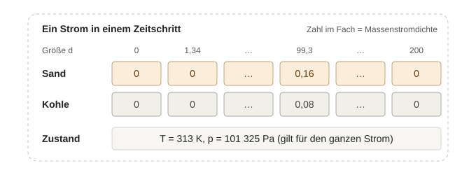
Abbildung: Aufbau einer Zeitscheibe mit zwei Stoffen (Beispielwerte 10 kg/s Sand und 5 kg/s Kohle, Normalverteilung um 100): je Stoff eine Zeile auf demselben Größenraster, Temperatur und Druck einmal je Strom.
- Anschauung: Der Strom gleicht einem Setzkasten mit einer Fachreihe je Stoff (Farbe) und einem Fach je Größe; in jedem Fach steht nur, wie viel Gramm darin liegen, und am ganzen Kasten hängt ein Zettel mit T und p. Mischen heißt zwei Kästen Fach für Fach zusammenschütten. Koagulation steckt zwei Steine verschiedener Farbe zusammen – dafür hat der Kasten kein Fach. MC-Partikel ersetzen den Setzkasten durch einen Karteikasten: eine Karte je Rechenpartikel mit Masse je Stoff und dem Gewicht (wie bei einer Wahlumfrage, in der 1000 Befragte mit ihren Merkmalen für Millionen Wähler stehen).
- Was sich am 6. Oktober 2026 geändert hat, ist nur die Zeitführung (Kapitel 5): vorher erhielt jede Unit den kompletten Eingang über den ganzen Zeitraum (Matrix q(t, d),
Process(input)) und rechnete daraus den kompletten Ausgang, Units in Flussrichtung nacheinander. In einem Kreis braucht jedoch jede Unit den fertigen Ausgang der anderen – ohne Iteration über den ganzen Zeitraum ist das nicht lösbar, und mit Zufall konvergiert eine solche Iteration nicht. Seitdem rechnet jede Unit je Makroschritt Δt genau eine Zeitscheibe; ein Kreis wird an einer Verbindung aufgeschnitten, die wie ein kurzes Rohr mit Totzeit Δt wirkt.
- „Monte Carlo“ bedeutet bisher: mehrere Läufe des ganzen Flowsheets mit verschiedenen Zufallszahlen (Kapitel 10). Der Zufall steckt im Prozess (z. B. schwankender Splitteranteil), nicht in einzelnen Partikeln.
- MC-Partikel (gewichtete Rechenpartikel mit eigener Größe, später eigener Zusammensetzung) sind im Flowsheet noch nicht umgesetzt. Es gibt sie nur in den isolierten Transportmodellen der Vergleichsansicht (Entwickler-Menü):
SParticle mit Position, Größe und Gewicht, Drift und Diffusion in einem Rohr (First Passage Time), auch auf der GPU. Vorgesehen ist, dass später eine Zeitscheibe statt (oder neben) der Verteilung eine Partikelliste trägt; die Schnittstelle Step(Eingänge, Ausgänge) bleibt dabei gleich.
2.5 Größenraster: logarithmisch, Fächer, SI-Einheiten (Vorschlag und Entscheidung 19. Oktober 2026)
- Entschieden (19. Oktober 2026): Umgesetzt wird nur Vorschlag 1 – logarithmisches Raster mit SI-Einheiten (Anzeige in µm), Stützstellen wie bisher, Trapezregel in ln d; Standard 1 µm – 1 mm mit 300 Klassen (100 je Dekade). Vorschläge 2 bis 4 sind zurückgestellt (Begründung in der Tabelle unten); Wahl von dmin und dmax in 2.6.
- Ausgangslage: Lineares Raster 0–200 mit 150 Stützstellen (Δd = 1,34), gespeichert wird die Massenstromdichte an jeder Stützstelle („Pfosten“), Integrale mit der Trapezregel; die Größeneinheit ist nur stillschweigend µm.
- Was daran stört (Zahlen für das Standardraster):
- Eine Stützstelle liegt bei d = 0 (unendlich viele Partikel je kg).
- Feine Partikel sind grob aufgelöst: Zwischen 1 und 10 µm liegen 7 Stützstellen, zwischen 100 und 200 µm dagegen 75. Feingut mit d50 = 5 µm (σln = 0,5) hat nur 4 Stützstellen im Bereich ±1σ; die Trapezregel erfasst davon 99,88 %.
- Über 200 µm gibt es kein Raster, Agglomerate wachsen aber genau dorthin. Eine breite Log-Normal-Verteilung (d50 = 30 µm, σln = 1) verliert schon am Inlet 2,9 % ihrer Masse.
- Welches Problem löst welcher Vorschlag? (Rückfrage 19. Oktober 2026) Nur Vorschlag 1 behebt ein Problem, das heute besteht. Die übrigen sind Zahlenwahl, Anzeige oder Vorbereitung für später:
| Vorschlag | Welches Problem? | Jetzt nötig? |
|---|
| 1 Logarithmisches Raster | Feine Partikel zu grob aufgelöst, nichts über 200 µm, Stützstelle bei d = 0 | ja – der eigentliche Schritt |
| 5 Standardraster | kein eigenes: die Zahlen, die Vorschlag 1 braucht (dmin > 0 muss gewählt werden) | ja, als Teil von 1 |
| 3 Anzeige je Dekade | Folge von 1: auf der logarithmischen Achse wirkt „je µm“ zum Feinen hin verschoben; die Rechnung ändert sich nicht | nur Anzeige, entscheidbar beim Blick auf die Heatmap |
| 4 Masse außerhalb | altes, kleines Problem; der Inlet-Editor zeigt den erfassten Anteil schon heute. Mit 1 bis 1000 µm liegen beim Standard-Inlet nur noch 0,004 % außerhalb | nein |
| 2 Fächer statt Pfosten | heute keins: Auf dem logarithmischen Raster rechnen Pfosten genauso genau, wenn die Trapezregel in ln d angewendet wird (Feingut d50 = 5 µm, 300 Klassen: 0,9993553 statt exakt 0,9993565, Abweichung 1,3·10−6). Der Unterschied 99,88 % / 100,00 % in der Abbildung gilt nur für das alte, grobe Raster. Nutzen erst später: MC-Karten für die Anzeige in Klassen zählen, Dyssol-Import, Kontinuums-Koagulation zum Vergleich | nein – zurückstellen bis Partikelmodus oder Dyssol-Vergleich |
Hinweis zur Umsetzung von 1: Die Trapezregel muss auf dem logarithmischen Raster in ln d gerechnet werden (Gewicht der Stützstelle di · ln r). In d gerechnet hätte sie einen festen Fehler von +3,5·10−4 bei 150 und +8,8·10−5 bei 300 Klassen.
- Vorschlag 1 – logarithmisches (geometrisches) Raster: Klassengrenzen di = dmin · ri mit r = (dmax/dmin)1/N, also gleich viele Klassen je Dekade und überall derselbe relative Größenschritt. Dieselbe Formel nutzt Dyssol für sein „geometrisches“ Raster. Das lineare Raster bleibt wählbar (Vergleiche, Tests).
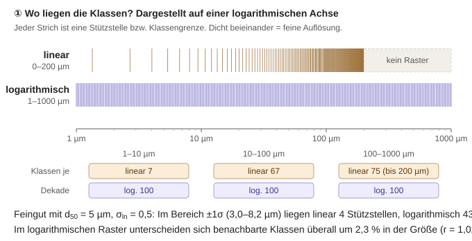
Abbildung: Lage der Stützstellen bzw. Klassengrenzen auf einer logarithmischen Achse – bisher (linear 0–200 µm, 150 Stützstellen) und Vorschlag (logarithmisch 1–1000 µm, 300 Klassen, 100 je Dekade).
- Vorschlag 2 – Fächer statt Pfosten: N Klassen mit N + 1 Grenzen; gespeichert wird je Klasse der Massenstrom im Fach [kg/s], nicht die Höhe der Kurve an einem Punkt. Das passt zum Setzkasten-Bild aus 2.4: In jedem Fach steht, wie viel darin liegt.
- Das Inlet füllt jedes Fach genau: ṁ · [Q3(obere Grenze) − Q3(untere Grenze)], mit der Verteilungssumme Q3 (für Normal, Log-Normal und RRSB geschlossen bekannt). Kein Trapez-Schätzfehler mehr, beim Feingut-Beispiel 100,00 % statt 99,88 %.
- Massenstrom = Summe der Fächer, ohne Δd-Faktor (vgl. die Lehre aus dem Δd-Fehler in 2.2). Splitter, Merger und Verzögerung bleiben Fach für Fach gleich einfach.
- Größenabhängige Modelle (z. B. Verzögerung) rechnen mit der Fachmitte, beim logarithmischen Raster dem geometrischen Mittel √(di · di+1).
- Später werden MC-Karten für die Anzeige einfach in die Fächer einsortiert (Roadmap Schritt 3), und Dyssol speichert ebenfalls Massenanteile je Klasse – Import und Vergleich werden direkt möglich.
- Nachteil: Der Fachinhalt hängt von der Fachbreite ab. Für die Anzeige und für den Vergleich verschiedener Raster wird deshalb durch die Breite geteilt (Dichte).
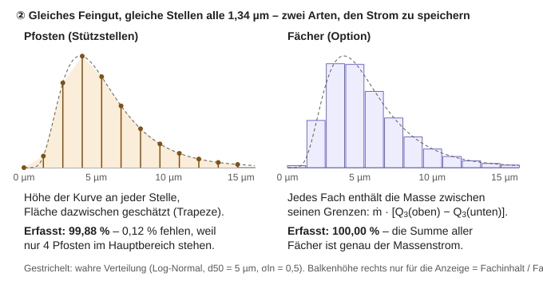
Abbildung: Dasselbe Feingut auf denselben Stellen – links als Höhen an Stützstellen mit Trapezfläche (99,88 % erfasst), rechts als Fachinhalte aus der Verteilungssumme Q3 (100,00 % erfasst).
- Vorschlag 3 – Anzeige je Dekade: Auf der logarithmischen Achse zeigen Heatmap und Randverteilungen den Massenstrom je Dekade (Fachinhalt geteilt durch die Fachbreite in Dekaden, wie dM/dlog dp in der Aerosoltechnik); auf der linearen Achse wie bisher je µm. Nur so entspricht die Fläche auf dem Bildschirm der Masse.
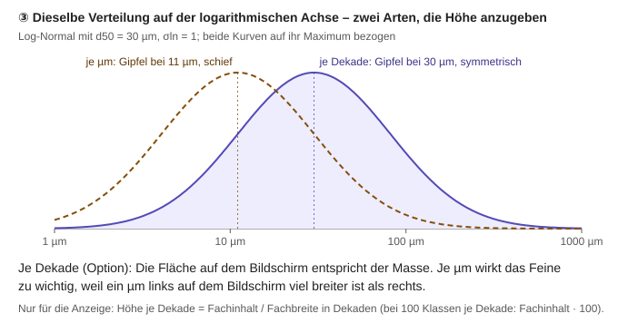
Abbildung: Dieselbe Log-Normal-Verteilung (d50 = 30 µm, σln = 1) auf logarithmischer Achse – je µm erscheint der Gipfel bei 11 µm und schief, je Dekade bei 30 µm und symmetrisch.
- Vorschlag 4 – Masse außerhalb des Rasters: Was von der Inlet-Verteilung unter dmin oder über dmax liegt, wird anteilig auf die Fächer umgelegt (Normierung; Dyssol speichert Verteilungen ebenfalls als Massenanteile, die sich zu 1 summieren), damit genau der eingestellte Massenstrom ins Flowsheet geht. Der Anteil außerhalb steht im Inlet-Editor (rot ab 1 %) und als Hinweis nach der Simulation. Alternative: abschneiden und nur melden (dann fehlt Masse). Bei der Standard-Normalverteilung (100 ± 25 µm) liegen 0,004 % außerhalb von 1–1000 µm.
- Vorschlag 5 – Standardraster: 1 µm bis 1 mm mit 300 Klassen (100 je Dekade, r = 1,023, Volumenverhältnis 1,072). Bei 100 µm ist eine Klasse 2,3 µm breit (bisher 1,34 µm), bei 5 µm 0,12 µm (bisher 1,34 µm). Einstellbar bleiben dmin, dmax und die Klassenzahl; der Reiter „Raster“ zeigt zusätzlich Klassen je Dekade und r.
- SI-Einheiten (vereinbart): Intern Meter, Kilogramm, Sekunde, Kelvin, Pascal. In der Oberfläche werden Größen in µm eingegeben und angezeigt (Raster, Verteilungsparameter, Referenzgröße der Verzögerung, Achsen).
- Prüfplan: (1) Erst nur die Einheiten auf SI umstellen – der Regressionstest muss alle Kennzahlen genau um den Faktor 106 (Dichten je m statt je µm) bzw. 1012 (Quadratsummen) verschoben wiederfinden; damit ist belegt, dass sich die Rechnung nicht geändert hat. (2) Dann Fächer und logarithmisches Raster mit neuen fachlichen Tests: Fachinhalte gegen Q3, Massenbilanz exakt über Splitter, Merger und Kreis, Verzögerung je Fach, danach neue Referenzwerte.
- Die alte Vergleichsansicht der Transportmodelle (Entwickler-Menü) behält ihr eigenes lineares Raster.
- Umsetzung (19. Oktober 2026):
- Raster:
SSizeGrid beschreibt Art (linear oder logarithmisch), Zahl der Stützstellen, dmin und dmax in m; daraus die Lage jeder Stützstelle und ihr Gewicht in der Trapezregel (linear Δd, logarithmisch di·ln r, Randpunkte halb). Ergebnisse, Ströme (Masse je Stoff für Mischtemperaturen), Merger, Verzögerung und Inlet rechnen mit diesen Gewichten. Standard: logarithmisch, 1 µm – 1 mm, 300 Stützstellen (r = 1,0234, 99,7 je Dekade, weil 300 Stützstellen 299 Abstände haben; mit 301 wären es genau 100 und die Dekaden lägen auf Stützstellen).
- SI-Einheiten: Größen in m, Dichten je m. Verteilungsparameter (Lage, bei der Normalverteilung auch σ), Referenzgröße der Verzögerung und die Rastergrenzen werden in µm eingegeben und angezeigt; die Heatmap zeigt die Dichte je µm und die Masse je µm.
- Oberfläche: Reiter „Raster“ mit Rasterart, dmin und dmax in µm, Zahl der Klassen, Anzeige von Klassen je Dekade und r; darunter Richtwerte zum Einsetzen (Agglomeration 1 µm – 1 mm / 300, Mahlen und Bruch 0,1 µm – 1 mm / 400, Keimbildung und Wachstum 0,3 nm – 10 µm / 450, Keimbildung bis Agglomerat 1 nm – 1 mm / 600) mit den Faustregeln aus 2.6, und eine Prüfung des eingegebenen Rasters: Jede Unit kann melden, was nicht passt; bisher melden Inlets, wenn mehr als 0,1 % ihrer Verteilung (exakt aus Q3) unter dmin oder über dmax liegen. Heatmap und Verteilungsvorschau haben beim logarithmischen Raster eine logarithmische Größenachse (Dekaden beschriftet).
- Nachweis Schritt 1 (nur SI): Alle 220 Kennzahlen des Regressionstests sind genau das 106-Fache (Summen) bzw. 1012-Fache (Quadratsummen) der Werte vom 14. Oktober 2026; größte relative Abweichung 9·10−14 (Rundung). Die bisherigen Fälle laufen seitdem ausdrücklich auf dem linearen Raster und sind auch nach Schritt 2 bitgleich.
- Nachweis Schritt 2 (logarithmisch, Test
test_sizegrid): Stützstellen genau auf dmin und dmax, Verhältnis überall r (Abweichung < 10−15); Erfassungsanteil gegen die exakte Verteilungssumme Q3 für fünf Verteilungen auf 1,3·10−6 genau (Normal 100/25 µm: 3·10−10); Q3 gegen numerische Integration der Dichte: 8·10−12; Massenbilanz Inlet → Verzögerung (p = 1) → Splitter 30/70: A + B = rein auf 3·10−14 kg von 50 kg; Verzögerung je Stützstelle von 1 bis 500 µm genau tref·d/dref (Abweichung < 10−15); Inlet-Meldungen „79 % unter dmin“ (dmin = 120 µm) und „2,3 % über dmax“ (dmax = 150 µm) für die Standard-Normalverteilung.
- Beobachtung beim Testen: Beginnt der Zulauf bei t = 0 nicht bei null, zählt die Trapezregel in der Zeit den ersten Wert am Eingang nur halb, die Verzögerung gibt ihn aber ganz weiter – die Massenbilanz der Verzögerung stimmt dann nur auf einen halben Zeitschritt des Anfangswerts (im Test 6·10−5 relativ). Das betrifft beide Raster und ist keine Folge der Umstellung; Zuläufe, die bei null beginnen, sind exakt.
2.6 Wahl von dmin und dmax: Keimbildung und Agglomerate (Diskussion 19. Oktober 2026)
2.7 Wofür das Größenraster gebraucht wird (Frage 19. Oktober 2026)
- Frage: Am Anfang stehen nur Inlets mit einer Verteilungsformel (Normal, Log-Normal, RRSB); danach wird entschieden, ob die Simulation im Kontinuum bleibt oder mit MC-Partikeln rechnet. Wofür genau braucht man dann das Raster?
- Im Kontinuum (heute einzige Darstellung) ist das Raster der Strom selbst. Die Formel beschreibt nur, was am Inlet hereinkommt. Schon die größenabhängige Verzögerung verschiebt jede Größe anders in der Zeit; am Ausgang gibt es dafür keine Formel mehr, nur noch Zahlen je Größe. Diese Zahlen müssen irgendwo stehen – an den Stützstellen des Rasters (Setzkasten-Bild aus 2.4). Jede Unit rechnet Stützstelle für Stützstelle; Heatmap und Massenbilanzen kommen direkt daraus. Später gilt das ebenso für Bruch und Wachstum im Kontinuum: Sie verschieben Masse zwischen den Stützstellen.
- Im Partikelmodus (geplant) wird das Raster zum Rechnen nicht gebraucht. Die Karten werden direkt aus der Formel platziert (Quantile, 13.8), jede Karte trägt ihre eigene Größe, und die Units rechnen mit Karten. Das Raster dient nur noch zum Auszählen für die Anzeige (Heatmap als Histogramm der Karten), für Ausgabe und Vergleich mit dem Kontinuum oder mit Dyssol. Ein zu enges Raster schneidet dort nur die Anzeige ab, nicht die Rechnung.
- Folgerung: Die Wahl von dmin, dmax und der Klassenzahl (2.6) ist heute wichtig, weil alles im Kontinuum gerechnet wird; im Partikelmodus ist sie eine Frage der Darstellung.
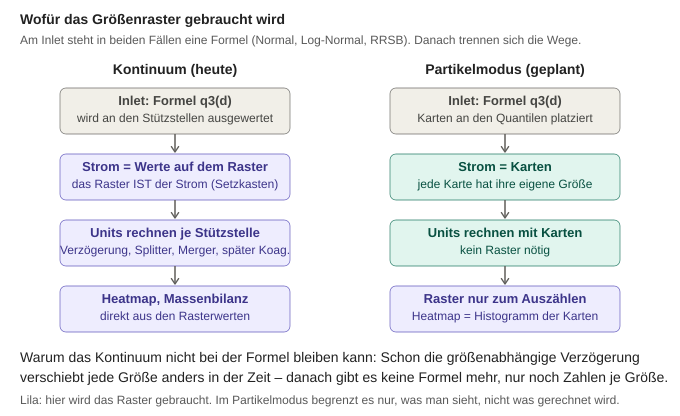
Abbildung: Weg der Größenverteilung im Kontinuum und im Partikelmodus – im Kontinuum ist das Raster der Strom, im Partikelmodus nur das Raster zum Auszählen für die Anzeige.
3 Inlet: Zulaufprofil und Größenverteilungen
- Zeitprofil: Massenstrom ṁ(t) stückweise linear zwischen Stützstellen, außerhalb konstant fortgesetzt.
- Separabler Ansatz: q(t,d) = ṁ(t) · q3(d) – die Form der Verteilung ist zeitlich konstant, nur die Höhe folgt dem Massenstrom.
- Verteilungen als Massendichte q3(d):
| Typ | Parameter | Dichte q3(d) |
|---|
| Normal (Gauß) | d0, σ | 1/(σ√(2π)) · exp(−(d−d0)² / (2σ²)) |
| Log-Normal | d50, σln | 1/(d·σln√(2π)) · exp(−ln²(d/d50) / (2σln²)) |
| RRSB | d′ (63,2 %), n | (n/d′)·(d/d′)n−1 · exp(−(d/d′)n), Q3(d) = 1 − exp(−(d/d′)n) |
- Erfassungsanteil im Raster: ∫dmindmax q3 dd wird im Editor angezeigt (grün bei Abweichung ≤ 1 %, sonst rot). Warum: Was außerhalb des Rasters liegt, geht verloren und verfälscht die Massenbilanz. Seit 19. Oktober 2026 berechnet mit den Gewichten des jeweiligen Rasters; zusätzlich meldet der Reiter „Raster“ schon vor dem Übernehmen, welches Inlet zu mehr als 0,1 % außerhalb liegt (exakt aus der Verteilungssumme Q3, siehe 2.5).
- Startwerte: Normalverteilung d0 = 100, σ = 25; Standard-Zeitprofil zentral in
GetDefaultInletTimeProfile().
4 Flowsheet als Graph
- Knoten = Units mit nummerierten Ein- und Ausgängen (Ports), Verbindungen von Ausgangs-Port zu Eingangs-Port.
- Je Port höchstens eine Verbindung: Aufteilen und Zusammenführen geschieht nur explizit über Splitter und Merger. Warum: eindeutige Massenbilanz an jedem Knoten, keine „versteckten“ Verzweigungen.
- Strom je Zeitschritt als
CStreamSlice (Vektor über die Größenklassen). Warum als eigene Klasse: Später soll dort auch eine Liste gewichteter Monte-Carlo-Partikel stehen können, ohne dass sich die Schnittstelle der Units ändert.
5 Zeitschrittweise Simulation (Makroschritte)
5.1 Prinzip
- Globale Uhr tk = k·Δt. In jedem Makroschritt rechnet jede Unit genau einmal: Sie bekommt die Ströme an ihren Eingängen und liefert die Ströme an ihren Ausgängen.
- Was zwischen zwei Schritten in einer Unit steckt (Material in einer Verzögerungsstrecke, Partikel in einer Mühle), ist ihr innerer Zustand (Hold-up).
5.2 Warum nicht über den ganzen Zeitraum iterieren?
Dyssol rechnet sequenziell-modular: Jede Unit verarbeitet einen ganzen Zeitabschnitt, Kreise werden durch Aufschneiden (Tear Streams) und Iteration bis zur Konvergenz gelöst. Für StoSiS wurde bewusst der zeitschrittweise Ansatz gewählt:
- Stochastik: Bei Iteration würfelt jede stochastische Unit in jeder Iteration neu – die Ergebnisse ändern sich ständig, ein Konvergenzkriterium greift nie sauber.
- Rechenaufwand: Ein Monte-Carlo-Lauf müsste je Iteration komplett wiederholt werden.
- Natürlich für Partikel und GPU: MC-Partikel „wandern“ tatsächlich Schritt für Schritt durch das Flowsheet; pro Schritt lassen sich alle Partikel parallel rechnen. Später sind auch Regelungen und Ereignisse möglich.
- Preis: Units müssen zustandsbehaftet sein, und Δt muss kleiner als die kürzeste Verweil- bzw. Rücklaufzeit sein (Kopplungsfehler der Ordnung Δt).
5.3 Reihenfolge innerhalb eines Schritts: „der Reihe nach“ (Gauß-Seidel)
- Jacobi („alle gleichzeitig“): Jede Unit liest die Ausgänge des vorherigen Schritts. Folge: künstliche Totzeit von Δt je Verbindung – eine Kette aus N Units verzögert um N·Δt.
- Gauß-Seidel („der Reihe nach“, gewählt): Die Units rechnen in Flussrichtung und lesen die Ausgänge ihrer Vorgänger aus demselben Schritt. Material läuft innerhalb eines Schritts durch beliebig lange Ketten; künstliche Totzeit nur einmal je Kreis (siehe Kapitel 6).
- Die Reihenfolge liefert eine topologische Sortierung (Algorithmus nach Kahn): Ein Knoten kommt dran, sobald alle Vorgänger fertig sind.
5.4 Multi-Rate (Konzept, noch nicht implementiert)
- Eine Unit darf innerhalb eines Makroschritts eigene, kleinere Teilschritte τ machen – nach außen zählt nur der Zustand am Schrittende.
- Bei ereignisgesteuertem Monte Carlo (Gillespie) ergibt sich τ von selbst aus der Gesamtrate R aller möglichen Ereignisse und wird nach jedem Ereignis neu gezogen:
τ = −ln(u) / R, u ~ U(0, 1)
- An der Makroschrittgrenze wird das nächste Ereignis einfach nicht ausgeführt; im nächsten Schritt wird neu gezogen. Das ist exakt, weil die Exponentialverteilung gedächtnislos ist. Viel Geschehen (großes R) → automatisch kleine Schritte („Aktionsdichte“).
- Gilt nur für zufällig gezogene Wartezeiten. Verwendet ein Verfahren eine feste MC-Zeitschrittweite τMC = 1/ΣR (mittlere Wartezeit, so im parallelen GPU-Algorithmus von Kotalczyk), führt „nicht ausführen“ wie „immer ausführen“ zu falschen Verteilungen; dann wird das anstehende Ereignis mit der Wahrscheinlichkeit τs/τMC ausgeführt (τs = Restzeit bis zur Grenze, „fractional MC time steps“, Kotalczyk & Kruis 2018; Dissertation Kotalczyk, Kap. 4.2).
5.5 Validierung
- Alte Rechnung (ganzer Zeitraum je Unit) und neue Rechnung (zeitschrittweise) für 9 Testfälle mit 375 000 Werten verglichen: maximale relative Abweichung 5·10−12 (reine Rundung).
6 Rückführungen (Recycle-Ströme)
6.1 Aufschneiden von Kreisen
- In einem Kreis gibt es keine „erste“ Unit – die topologische Sortierung bleibt stecken. Dort wird genau eine Verbindung aufgeschnitten (Tear Stream): Ihr Ziel liest den Strom aus dem vorherigen Schritt. Physikalisch wirkt das wie ein kurzes Rohr mit Totzeit Δt.
- Erkennung: Hängt die Sortierung fest, wird für jeden offenen Knoten geprüft, ob er über offene Verbindungen zu sich selbst zurückführt (Tiefensuche). Ein eigener Algorithmus für stark zusammenhängende Komponenten (Tarjan) ist dafür nicht nötig.
- Der stationäre Zustand hängt nicht vom Schnittort ab; dieser verschiebt nur das zeitliche Verhalten um Δt.
6.2 Auswahlregel für die Schnittstelle
- Merger bevorzugt: Jeder sinnvolle Kreis enthält einen Knoten mit mehreren Eingängen (ein Kreis ohne Zusammenführung hätte keinen Zulauf) – dort mündet die Rückführung.
- Eingang von einem Trennapparat (heute Splitter, später Sieb, Sichter, Zyklon): Dort beginnt der Rückführstrom physikalisch. So erhält Frischgut, das noch nie im Kreis war, keine künstliche Verzögerung.
- Danach: der Knoten mit den meisten bereits erledigten Eingängen (Eintrittspunkt in den Kreis).
- Ergebnis unabhängig von der Reihenfolge, in der die Blöcke gezeichnet wurden. Eine manuell als Rückführung markierte Verbindung hat Vorrang. Aufgeschnittene Verbindungen werden orange gestrichelt angezeigt.
- Beispiel mit zwei Mergern im Kreis (Frischgut-Zugabe in die Rückführung): geschnitten wird Splitter → Merger 2, nicht Merger 2 → Merger 1, weil durch letztere Verbindung auch Frischgut fließt.
6.3 Validierung
| Testfall | Erwartung | Ergebnis |
|---|
| Kreis Merger → Splitter 50/50, Zulauf 10 | stationär: Merger 20, Outlet 10; Einschwingen Mk = 10 + ½·Mk−1 = 10, 15, 17,5, 18,75 … | exakt ✓ |
| Kreis mit 1 s Verzögerung, 30 % Rücklauf | Merger 10/0,7 = 14,2857, Outlet 10 | ✓ |
| Massenbilanz dieses Kreises | rein − raus = Hold-up = 14,2857·1 s + 4,2857·0,1 s = 14,714 | 14,714 ✓ |
7 Verzögerungs-Unit (Platzhalter-Prozess)
tdelay(d) = tref · (d / dref)p
- Hold-up als Ringpuffer der letzten Eingänge; Länge aus der größten Verzögerung; lineare Interpolation zwischen den Zeitpunkten.
- dref ist nur ein Normierungsfaktor (dasselbe Verhalten lässt sich über tref einstellen) und wird bewusst nicht automatisch aus dem Zulauf berechnet: Dann hinge die Verweilzeit eines Partikels von den anderen Partikeln ab – physikalisch unbegründet.
- dref wird in µm eingegeben (intern m, Standard 100 µm). Auf dem logarithmischen Raster gilt die Formel unverändert je Stützstelle; die Stützstelle d = 0 des linearen Rasters wird wie bisher durch eine winzige Größe (10−12 m) ersetzt.
- Diese Unit dient zum Testen der Infrastruktur und wird durch realistische Transportmodelle (Verweilzeitverteilungen) ersetzt.
8 Zufallszahlen und Reproduzierbarkeit
- Globaler Seed: gleicher Seed → gleiches Ergebnis (Fehlersuche, Nachvollziehbarkeit, Vergleich von Varianten mit identischem Zufall).
- Generator Mersenne Twister
mt19937_64: im C++-Standard exakt festgelegt → auf Windows (MSVC) und Linux (GCC, amplitUDE) dieselbe Folge.
- Gleichverteilung: obere 53 Bit einer 64-Bit-Zufallszahl → Zahl in [0, 1) mit voller double-Genauigkeit.
- Eigene Normalverteilung (Polarmethode nach Marsaglia) statt
std::normal_distribution. Warum: Der Standard schreibt für die Normalverteilung kein Verfahren vor; jede Standardbibliothek formt die Zufallszahlen anders um. Mit eigener Implementierung sind die Zahlen plattformübergreifend gleich (bis auf Rundung der Logarithmus-Funktion in der letzten Stelle).
- Eigener Zufallsstrom je Unit:
SeedUnit = SplitMix64( Seed ⊕ SplitMix64( FNV-1a(Knoten-ID) ) )
- Eigener Strom je Unit, damit zwei Splitter nicht im Gleichtakt schwanken (das wäre eine künstliche Korrelation).
- Hash statt Addition: Bei „Seed + ID“ hätten Seed 1/Knoten 2 und Seed 2/Knoten 1 denselben Strom – Läufe mit verschiedenen Seeds wären nicht unabhängig.
- An die Knoten-ID gebunden, nicht an die Reihenfolge: Fügt man einen Block hinzu, ändern sich die Zufallszahlen der anderen Blöcke nicht.
std::hash ist ungeeignet, weil implementierungsabhängig; FNV-1a und SplitMix64 sind kurz, schnell und überall gleich.- Lauf-Seeds bei mehreren Läufen: Lauf 1 nutzt genau den eingestellten Seed (ein einzelner Lauf ist damit identisch zu „1 Lauf“), weitere Läufe erhalten per SplitMix64 abgeleitete Seeds.
- Der Zufallsprozess eines Splitters läuft auch ohne Zulauf weiter → die Zufallsfolge hängt nur vom Seed ab, nicht von der Verdrahtung.
9 Stochastischer Splitter (Ornstein-Uhlenbeck-Prozess)
9.1 Modell
- Reiner Mengenteiler: Der Anteil gilt für alle Partikelgrößen gleich (größenabhängiges Trennen = eigene Unit „Sieb/Sichter“ mit Trennkurve).
- Der OU-Prozess legt fest, wie viel in jeden Ausgang geht. Im Partikelmodus muss zusätzlich festgelegt werden, wie die Karten verteilt werden, damit dieser Anteil herauskommt (13.18).
- Der Anteil gi(t) jedes Ausgangs i = 1 … N−1 folgt einem eigenen Ornstein-Uhlenbeck-Prozess; der letzte Ausgang erhält den Rest.
dg = −(g − μ)/τ · dt + σ·√(2/τ) · dW
- Warum OU: stationär, normalverteilt mit Mittelwert μ und Streuung σ, kehrt immer zum Mittelwert zurück („mean-reverting“) und besitzt genau eine Korrelationszeit τ (Autokorrelation e−Δt/τ). Damit ist er das einfachste realistische Modell für „Schwankung um einen Sollwert mit Gedächtnis“ (z. B. träge pendelnde Klappe vs. unruhiger Strom).
- Grenzfälle: τ → 0: jeder Schritt unabhängig N(μ, σ²); τ → ∞: in jedem Lauf ein zufälliger, aber konstanter Anteil.
9.2 Exakte Fortschreibung
gk+1 = μ + (gk − μ)·a + σ·√(1 − a²)·ξ, a = e−Δt/τ, ξ ~ N(0, 1)
- Warum exakt statt Euler-Maruyama: Das Euler-Verfahren hat einen Diskretisierungsfehler; die exakte Formel liefert für jedes Δt die richtige Verteilung. Mittelwert, Streuung und Zeitverhalten hängen damit nicht von der Schrittweite ab (vgl. Gillespie 1996).
- √(1 − a²) wird numerisch genauer über
expm1 berechnet (wichtig bei Δt ≪ τ).
- Stationärer Start: g(0) ~ N(μ, σ²) – keine Einschwingphase, der Prozess ist von Anfang an im statistischen Gleichgewicht.
9.3 Massenerhaltung und Grenzen
- Anteile werden auf [0, 1] abgeschnitten; ist die Summe der schwankenden Anteile größer als 1, werden sie anteilig gekürzt; der Rest-Ausgang erhält 1 − Summe. → Masse bleibt in jedem Schritt exakt erhalten.
- Abschneiden verschiebt bei großem σ den Mittelwert leicht → Hinweis im Editor, wenn μ ± 3σ außerhalb [0, 1] liegt oder Σμi + 3·√(Σσi²) > 1. Bewusst verworfene Alternative: Schwankung auf Logit-Skala (bleibt automatisch in [0, 1], σ aber weniger anschaulich).
- Bei 3 Ausgängen: eigene σi, τi je Ausgang; der Rest schwankt mit, Var(Rest) = σ1² + σ2² (unabhängige Prozesse).
- Die Vorschau im Editor zeigt exakt den Verlauf der nächsten Simulation, weil die Anteile nur von Seed und Δt abhängen, nicht vom Zulauf.
9.4 Validierung (lange Einzelläufe)
| Fall | Erwartung | Ergebnis |
|---|
| μ = 0,3, σ = 0,05, τ = 2 s, Δt = 0,1 s | Mittel 0,3 · Std 0,05 · Autokorr.(2 s) = e−1 = 0,368 | 0,301 · 0,049 · 0,353 |
| dasselbe mit Δt = 0,5 s | gleiche Statistik (Δt-unabhängig) | 0,301 · 0,050 · 0,368 ✓ |
| τ = 0 | Autokorrelation ≈ 0 | 0,005 ✓ |
| 3 Ausgänge, σ = 0,03 / 0,06 | Rest-Std = √(0,03² + 0,06²) = 0,067 | 0,066 ✓ |
| Massenfehler je Schritt | 0 | exakt 0 ✓ |
10 Mehrere Läufe und Statistik (Monte Carlo)
10.1 Warum mehrere Läufe?
- Ein stochastischer Lauf ist nur eine mögliche Realisierung. Aussagen erfordern die Verteilung über viele Läufe (Mittelwert, Streuung, Perzentile). Die Unsicherheit des Mittelwerts sinkt mit 1/√N.
- Ein rein deterministisches Flowsheet wird nur einmal gerechnet.
10.2 Welford-Verfahren für Mittelwert und Varianz
x̄n = x̄n−1 + (xn − x̄n−1)/n M2,n = M2,n−1 + (xn − x̄n−1)·(xn − x̄n) s² = M2,N/(N − 1)
- Ein Durchgang, kein Speichern aller Läufe: Jeder Lauf wird sofort eingerechnet. Statt N voller Zeit-Größe-Matrizen werden nur drei gehalten (Lauf 1, Mittelwert, Varianz).
- Numerisch stabil: Die Lehrbuchformel s² = (Σx² − N·x̄²)/(N − 1) zieht zwei fast gleich große Zahlen voneinander ab (Auslöschung) – genau dann problematisch, wenn die Streuung klein gegenüber dem Mittelwert ist (bei uns typisch: Massenstrom ≈ 10, Streuung ≈ 0,5). Welford vermeidet das.
- Teiler N − 1 (Bessel-Korrektur): erwartungstreue Schätzung der Varianz aus einer Stichprobe.
10.3 Speicherstrategie
- Volle Matrizen nur für Lauf 1 (Einzellauf), Mittelwert und Standardabweichung.
- Für jeden Lauf nur kleine Kennwerte: ṁ(t), m(d) und Gesamtmasse → daraus werden Streubänder, Perzentile und Einzellauf-Kurven exakt berechnet.
10.4 Auswertung und Darstellung
- Kurven: Mittelwert mit Band ±1σ (Standard), ±2σ oder 5–95-%-Perzentil; optional Einzelläufe als dünne Linien. Das σ-Band des Massenstroms wird bei 0 abgeschnitten (physikalisch nicht negativ).
- Perzentile über lineare Interpolation zwischen den sortierten Werten (Typ 7 nach Hyndman & Fan); aussagekräftig erst ab etwa N ≥ 20.
- Heatmap umschaltbar: Einzellauf, Mittelwert, Standardabweichung je Zelle.
- Wichtiges Detail: Die Randverteilungen der σ-Heatmap werden nicht als Integral der σ-Matrix berechnet, sondern aus den Kennwerten der Einzelläufe. Die Streuung eines Integrals ist nicht das Integral der Streuungen, weil die Größenklassen untereinander korreliert sind (Kovarianzen).
11 Validierung gegen eine analytische Lösung
Idee: Für einen einfachen Fall lässt sich die Streuung exakt ausrechnen. Stimmt die Simulation innerhalb der statistischen Unsicherheit damit überein, ist das ein starker Nachweis, dass OU-Fortschreibung, Zufallszahlen, Seeds, Zeitintegration und Statistik zusammen korrekt arbeiten (Verifikation).
- Testfall (ohne Rückführung): Inlet mit konstantem Zulauf ṁ = 10 kg/s → Splitter mit 2 Ausgängen, Ausgang 1 stochastisch (μ = 0,3, σ = 0,05, τ = 2 s) → Outlet A; Ausgang 2 (Rest) → Outlet B. Betrachtet wird die Masse M, die in T = 40 s bei Outlet A ankommt.
- Masse am Ausgang: Der Massenstrom bei A ist Zulauf mal aktueller Anteil, ṁA(t) = ṁ·g(t); die Masse ist das Integral über die Zeit: M = ṁ · ∫0T g(t) dt.
- Erwartungswert:
E[M] = μ · ṁ · T
- Varianz: Mit der Kovarianz des OU-Prozesses Cov(g(t), g(s)) = σ²·e−|t−s|/τ folgt
Var[M] = ṁ²σ² ∫0T∫0T e−|t−s|/τ ds dt = 2·ṁ²·σ²·τ·( T − τ·(1 − e−T/τ) )
- Herleitung in Worten: Die Abweichung der Masse vom Mittelwert ist ṁ·∫(g(t) − μ) dt. Quadriert man ein Integral, entsteht ein Doppelintegral über alle Zeitpaare (t, s); dessen Mittelwert ist die Kovarianz σ²·e−|t−s|/τ – sie beschreibt, wie stark der Anteil zu zwei Zeitpunkten „im Gleichtakt“ daneben liegt (gleicher Zeitpunkt: σ², weit auseinander: 0). Das Doppelintegral lässt sich geschlossen ausrechnen.
- Bedeutung der Größen: ṁ Zulauf, μ mittlerer Anteil, σ typische Abweichung des Anteils, τ Korrelationszeit (wie lange eine Abweichung anhält), T Betrachtungsdauer; der Term τ·(1 − e−T/τ) ist eine kleine Randkorrektur für Anfang und Ende des Zeitraums. Zahlen: Var[M] = 2·100·0,0025·2·(40 − 2) = 38 kg² → Std = 6,16 kg.
- Interpretation: Für T ≫ τ gilt Var[M] ≈ 2ṁ²σ²τT – die Streuung der Masse wächst nur mit √T. Anschaulich besteht der Zeitraum aus etwa T/(2τ) = 10 „unabhängigen Abschnitten“: Läge der Anteil die ganze Zeit um σ daneben, wäre M um ṁσT = 20 kg falsch; weil sich 10 unabhängige Abschnitte teilweise ausgleichen, sind es nur etwa 20/√10 ≈ 6,3 kg.
- Ergebnis (ṁ = 10, μ = 0,3, σ = 0,05, τ = 2 s, T = 40 s, Δt = 0,1 s, N = 2000 Läufe):
| Größe | analytisch | Simulation |
|---|
| Mittelwert der Masse | 120,000 | 120,058 |
| Standardabweichung der Masse | 6,164 | 6,094 (−1,1 %) |
| 5–95-%-Perzentil | 109,86 … 130,14 | 110,04 … 130,07 |
| Std des Massenstroms zu einem Zeitpunkt | ṁ·σ = 0,500 | 0,512 |
- Statistische Einordnung: Auch die aus N Läufen geschätzte Standardabweichung ist selbst eine Zufallsgröße – wiederholt man das ganze Experiment mit anderen Seeds, kommt ein etwas anderer Wert heraus. Für normalverteilte Daten gilt Var(s²) ≈ 2σ⁴/(N − 1); die Wurzel halbiert den relativen Fehler, also relative Unsicherheit von s ≈ 1/√(2(N − 1)) = 1,6 % bei N = 2000. Die Abweichung von −1,1 % liegt damit innerhalb des Erwartbaren. Für den Mittelwert entsprechend: Standardfehler σM/√N = 6,16/√2000 = 0,14 kg; gemessen 0,06 kg Abweichung.
- Was ein Fehler im Programm bewirken würde: z. B. falsches Δt in der OU-Formel, korrelierte Seeds oder fehlendes Δd in der Integration verschieben das Ergebnis systematisch – die Abweichung bliebe auch bei großem N bestehen, statt wie 1/√N zu schrumpfen.
11.1 Konvergenz mit der Anzahl der Läufe
- Für N = 10 … 2000 wurde das Experiment jeweils 40-mal mit verschiedenen Seeds wiederholt und der mittlere (RMS-)Fehler bestimmt.
- Doppelt-logarithmisch aufgetragen ergibt sich eine Gerade mit Steigung −½, weil Fehler ∝ N−½: 100-mal mehr Läufe → nur 10-mal kleinerer Fehler. Das ist das typische Konvergenzverhalten jeder Monte-Carlo-Schätzung und zeigt, wie viele Läufe für eine gewünschte Genauigkeit nötig sind.
- Gemessene Punkte und Theorie (Mittelwert: (σM/E[M])/√N; Standardabweichung: 1/√(2(N − 1))) liegen übereinander. Daten:
docs/abbildungen/Konvergenz_MonteCarlo_Daten.csv.
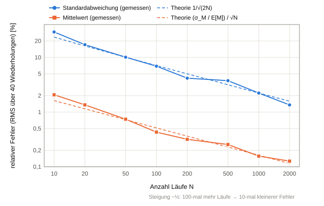
Abbildung: Relativer Fehler von Mittelwert und Standardabweichung der Masse an Outlet A über der Anzahl der Läufe N (RMS über 40 Wiederholungen); gestrichelt: Theorie.
12 Oberfläche (kurz)
- Einstellungen und Darstellung getrennt: Einstellungsfenster (Reiter Knoten/Raster) vs. Hauptfenster (Flowsheet, Kurven, Heatmap). „Übernehmen“ schreibt nur Werte; gerechnet wird ausschließlich über „Simulieren“ → bewusste, nachvollziehbare Rechenläufe.
- Block-Palette mit Drag & Drop, Blöcke löschen/umbenennen, Namen je Typ nummeriert (Inlet1, Splitter1 …).
- Kabel orthogonal mit runden Ecken; aufgeschnittene Rückführungen orange gestrichelt → die Schnittstelle der Simulation ist sichtbar.
- Simulationsleiste: Dauer, Seed, Anzahl Läufe (Standard 20); Fortschritt mit Abbrechen.
- Start-Flowsheet (seit 19. Oktober 2026): einfache Rückführung Inlet → Merger → Splitter → Outlet (70 %), die Verzögerung sitzt nur im Rückführstrom: Splitter → Verzögerung → Merger (30 %); vorher Inlet → Verzögerung → Outlet. Anordnung ohne Kabelkreuzung: Der Splitter verzweigt nach oben zum Outlet und nach unten zur Verzögerung, die Rückführung läuft unten herum in den Merger. Der Graph schneidet den Kreis automatisch auf (Kapitel 6). Ein eigener Fall im Regressionstest überwacht es.
- Navigation im Flowsheet (seit 19. Oktober 2026): Das Mausrad zoomt um die Mausposition (Faktor 1,15 je Raste, 20 % bis 400 %, ohne Strg). Ziehen auf freier Fläche oder mit gedrückter mittlerer Maustaste verschiebt die Ansicht (große feste Zeichenfläche, frei verschiebbar). Bis zur ersten eigenen Navigation passt sich die Ansicht an die Fenstergröße an und verkleinert nur, wenn das Flowsheet sonst nicht ganz zu sehen wäre (Start-Flowsheet bei Full HD: 86 %). Rechtsklick auf die freie Fläche: „Ganzes Flowsheet zeigen“ und „Zoom 100 %“. Warum: Größere Flowsheets passen nicht in die Flowsheet-Fläche (bei Full HD etwa 600 px breit; fünf Blöcke nebeneinander bräuchten 760 px).
- Reiter „Raster“ (seit 19. Oktober 2026): Rasterart, Grenzen in µm und Klassenzahl frei wählbar, Richtwerte für typische Prozesse zum Einsetzen, Prüfung der Inlets gegen das eingegebene Raster (2.5).
13 Koagulator: Koagulation, Bruch und Wachstum (in Planung)
Planungsstand 9. Oktober 2026 – noch nicht implementiert; Entscheidungen siehe 13.7.
Zum schnellen Nachlesen: Die Entscheidungen zu MC-Partikeln und zur Koagulationsregel sind mit je einem Satz Begründung in 13.16 Kurzfassung zusammengestellt; die Abschnitte 13.8 bis 13.15 enthalten die Herleitungen mit Abbildungen, 13.17 die Formelkarte von Druck und Temperatur bis zum Rauschen.
13.1 Mechanismen
| Mechanismus | Was passiert | Partikelanzahl | Masse | Modellgrößen |
|---|
| Koagulation / Agglomeration | zwei Partikel stoßen zusammen und bilden eines; die Volumina addieren sich (100 µm + 100 µm → ∛(100³+100³) ≈ 126 µm) | sinkt | bleibt | Kernel β(u, v): wie oft Partikel der Volumina u und v zusammenstoßen |
| Bruch | ein Partikel zerfällt in zwei oder mehr Bruchstücke | steigt | bleibt | Bruchrate S(v), Bruchstückverteilung b(v | w) |
| Wachstum | Partikel werden durch Material von außen größer (Beschichtung, Kondensation) | bleibt | steigt | Wachstumsrate G = dd/dt |
| Keimbildung (optional) | neue Partikel entstehen an der kleinsten Größe (z. B. aus übersättigtem Dampf) | steigt | steigt | Keimbildungsrate J |
- Wachstum und Keimbildung brauchen eine Massenquelle (Sprühflüssigkeit, Dampf …). Ohne Materialmodell ist das zunächst ein Parameter; die Massenbilanz lautet dann ṁaus = ṁein + ṁWachstum statt ṁaus = ṁein.
13.2 Populationsbilanz
Alle Mechanismen zusammen beschreibt die Populationsbilanz (Hulburt & Katz 1964; Ramkrishna 2000) für die Anzahldichte n(v, t) der Partikel im Apparat (v = Partikelvolumen):
∂n/∂t = ṅein − ṅaus + Bagg − Dagg + Bbr − Dbr − ∂(Gv·n)/∂v
Bagg(v) = ½ ∫0v β(u, v−u)·n(u)·n(v−u) du Dagg(v) = n(v) ∫0∞ β(v, u)·n(u) du
Bbr(v) = ∫v∞ b(v | w)·S(w)·n(w) dw Dbr(v) = S(v)·n(v)
- B = Geburt (birth), D = Tod (death) von Partikeln der Größe v. Der Faktor ½ verhindert, dass jedes Paar doppelt gezählt wird. Der Koagulationsteil ist die Smoluchowski-Gleichung (1917).
- Koagulation ist nichtlinear (n·n): Die Stoßrate hängt von der Konzentration ab, also davon, wie viele Partikel sich im Apparatevolumen befinden. Deshalb braucht der Koagulator einen Hold-up und ein Volumen.
13.3 Einbettung in StoSiS
- Der Koagulator ist eine Unit mit Hold-up als innerem Zustand (wie der Ringpuffer der Verzögerungs-Unit). Je Makroschritt Δt: Zulauf in den Hold-up, Mechanismen über Δt rechnen, Ablauf abziehen.
- Apparatemodell (entschieden): ideal durchmischter Behälter mit mittlerer Verweilzeit τV (Ablauf = Hold-up/τV, Ablauf hat die Verteilung des Hold-ups) und Volumen V; im stationären Zustand Hold-up = ṁein·τV. Anfangsfüllung einstellbar: leer oder mit Masse und Größenverteilung. Eine Kette solcher Behälter ergibt das Tanks-in-Series-Modell. Später kann τV = V/Q aus dem Volumenstrom Q des Trägerfluids folgen, statt Parameter zu sein.
- Zum Vergleich Dyssol: Agglomerator und Granulator in Dyssol halten die Hold-up-Masse fest auf dem Anfangswert (Quellcode: Masse merken, Zulauf addieren, Masse zurücksetzen; ṁaus = ṁein). Das entspricht einem Apparat mit perfekter Füllstandsregelung im Dauerbetrieb, beschreibt aber An- und Abfahren oder Zulaufpausen nicht. Andere Dyssol-Units (z. B. Bunker) haben eine veränderliche Hold-up-Masse.
- Hier wird Multi-Rate (5.4) konkret: Ein ereignisgesteuerter MC-Koagulator macht innerhalb von Δt beliebig viele eigene Ereignisschritte.
- Umrechnung Masse ↔ Anzahl: N = m / (ρ·π/6·d³) – braucht die Dichte ρ und eine Einheit der Größenachse (µm).
13.4 Lösungsverfahren
| Klassenmethode (deterministisch) | Gewichtete Monte-Carlo-Partikel |
|---|
| Prinzip | Anzahl je Größenklasse; neue Partikel werden auf die zwei benachbarten Stützstellen verteilt, sodass Anzahl und Masse erhalten bleiben (Fixed Pivot, Kumar & Ramkrishna 1996; Cell Average, Kumar et al. 2006 – beide auch in Dyssol) | Liste von Rechenpartikeln mit freier Größe und Gewicht (= wie viele echte Partikel sie vertreten); Stoß- und Bruchereignisse werden ausgewürfelt (Kruis et al. 2000; Kotalczyk & Kruis 2017) |
| Vorteile | schnell, rauschfrei, direkt mit Dyssol vergleichbar | kein Raster nötig, mehrere Eigenschaften je Partikel möglich, gut auf GPU parallelisierbar (Wei & Kruis 2013) – Kern der Dissertation |
| Nachteile | Rasterabhängig (numerische Diffusion), Raster muss den ganzen Größenbereich abdecken | statistisches Rauschen ∝ 1/√NMC; Zahl der Rechenpartikel muss begrenzt werden (Zulauf bringt ständig neue) |
- Zwei Arten von Streuung unterscheiden: Prozessschwankung (physikalisch modelliert, z. B. OU-Splitter) und MC-Rauschen (numerisch, verschwindet mit wachsendem NMC). Die Statistik über mehrere Läufe (Kapitel 10) enthält beide; für die Auswertung muss das MC-Rauschen klein gegen die Prozessschwankung sein oder getrennt ausgewiesen werden.
13.5 Knackpunkte
- Größenraster: Das lineare Raster 0–200 mit Stützstelle bei d = 0 passt schlecht: Bei d = 0 ist die Partikelzahl je Masse unendlich, Agglomerate wachsen über 200 hinaus, feine Bruchstücke werden grob aufgelöst. Üblich ist ein logarithmisches Raster (z. B. Volumenverhältnis 2 zwischen Klassen) mit dmin > 0. Masse außerhalb des Rasters muss mindestens gemeldet werden, damit die Massenbilanz sichtbar bleibt. Umgesetzt am 19. Oktober 2026 (2.5, Wahl der Grenzen 2.6).
- Zahl der Rechenpartikel (MC): Entweder verlassen Rechenpartikel den Apparat zufällig (einfach, aber Rauschen im Ablauf) oder alle Gewichte werden um den Ablaufanteil verkleinert und ähnliche Partikel zusammengelegt (Merging, Kotalczyk & Kruis 2017; deterministischer Ablauf, aufwendiger).
13.6 Validierungsmöglichkeiten
- Konstanter Kernel β0, geschlossener Behälter: Gesamtanzahl N(t) = N0 / (1 + β0·N0·t/2); für eine exponentielle Startverteilung ist sogar die ganze Verteilung analytisch bekannt (Scott 1968).
- Konstanter Kernel, durchmischter Behälter im stationären Zustand: Anzahlbilanz 0 = (Nein − N)/τV − ½·β0·N² (Konzentrationen) → N = (√(1 + 2β0τVNein) − 1)/(β0τV).
- Bruch mit linearer Bruchrate und gleichverteilten Bruchstücken: analytische Lösungen nach Ziff & McGrady (1985).
- Konstantes Wachstum G: Die Verteilung verschiebt sich unverändert um G·t.
- Massenerhaltung bei Koagulation und Bruch exakt; Vergleich Klassenmethode ↔ MC ↔ Dyssol-Agglomerator (Beispiel-Flowsheet „Agglomerator“ in Dyssol).
13.7 Entscheidungen
- Entschieden (9. Oktober 2026): Reihenfolge Koagulation → Bruch → Wachstum → Keimbildung (Keimbildung gehört dazu). Durchmischter Behälter mit τV und V, Anfangsfüllung einstellbar. Dyssol-Löser als optionale Vergleichslogik; Hauptweg ist eine eigene Logik mit MC-Partikeln. Logarithmisches Größenraster. Vor dem Koagulator kommen die Materialien (Kapitel 14), statt übergangsweise eine Dichte als Parameter einzuführen.
- Kernels: Keine Vorgaben aus der Arbeitsgruppe. Vorschlag: Kernels mit analytischer Lösung (konstant, Summe, Produkt) für die Validierung, dazu die physikalischen Kernels aus der Literatur bzw. aus Dyssol (Brownsche Bewegung, Scherung, Sedimentation …) für die Vergleichbarkeit. Physikalische Kernels brauchen Stoff- und Fluiddaten (Temperatur, Gasviskosität).
- Entschieden (15. Oktober 2026): Koagulationsregel Totalkoagulation – das ganze leichtere Paket koaguliert (stochastische Auflösung sF = Wmin, Kotalczyk & Kruis 2017; gleiche Regel wie Zhao, Kruis & Zheng 2009). Die Regel wird austauschbar gebaut, damit sich feinere Auflösungen und SWA zum Vergleich wählen lassen (13.15).
- Entschieden (19. Oktober 2026): Splitter im Partikelmodus verteilen die Karten systematisch mit dem Konto-Verfahren; der Anteil kommt wie bisher aus dem Splittermodell (fest oder OU-Prozess). Kopieren mit Merging höchstens später als Vergleich (13.18).
- Entschieden (15. Oktober 2026): Die Darstellung ist je Simulation wählbar – Kontinuum (heutiger Code) oder MC-Partikel ab dem Inlet; keine Mischform innerhalb eines Stroms. Wer irgendwo Partikel einführt, braucht sie in der ganzen Anlage.
- Offen: Details der MC-Logik – Koagulationsereignis siehe 13.9; Splitter im Partikelmodus und Partikelzahl siehe 13.8.
13.8 Mehrere Stoffe in einem Partikel: Kontinuum oder MC-Partikel (Diskussion 13. Oktober 2026)
- Heute (Merger, Splitter, Verzögerung): Der Strom speichert die Masse je Stoff und Größenklasse. Jedes Partikel besteht aus genau einem Stoff – gemischt wie Salz und Pfeffer im Streuer, aber jedes Korn bleibt Salz oder Pfeffer. Solange keine Unit Partikel verbindet, ist „Masse von Stoff c bei Größe d“ eine vollständige Beschreibung. Die Temperatur ist je Strom gemeinsam (sofortiger Wärmeausgleich beim Mischen), der Druck ebenfalls.
- Koagulation zweier Stoffe: Sand 100 µm + Kohle 100 µm → ein Partikel mit ∛(100³ + 100³) ≈ 126 µm (bei unporösen Partikeln addieren sich die Volumina V = Σ mc/ρc), das Sand und Kohle enthält. Trägt man dessen Sand- und Kohlemasse einfach in die Klasse 126 µm ein, sieht das Ergebnis genauso aus wie reine Sand- und reine Kohlepartikel von 126 µm. Die Information „diese Massen kleben aneinander“ geht verloren. Folgen z. B.: Ein Dichtesichter würde Sand und Kohle des Agglomerats trennen, obwohl sie fest verbunden sind; Dichte und Wärmekapazität des Einzelpartikels, Haftverhalten oder Abbrand der Kohle hängen von der Zusammensetzung des Partikels ab.
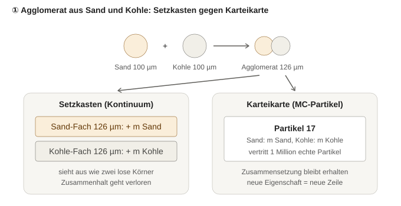
Abbildung: Agglomerat aus Sand und Kohle – im Setzkasten in zwei Fächer zerlegt (der Zusammenhalt geht verloren), auf der Karteikarte ein Partikel mit beiden Stoffen.
- Dyssol: Der Agglomerator rechnet auf der Größenverteilung der gesamten Mischung (Quellcode:
GetPSD(t, PSD_Number) und SetPSD ohne Stoffangabe). Welche Stoffe in einem Partikel verbunden sind, wird nicht erfasst.
- Kontinuum mit Zusammensetzung: Je Stoff eine eigene Achse, n(vSand, vKohle, t) (bivariate Populationsbilanz). Mit 100 Klassen je Achse: 1 Stoff 100 Zellen, 2 Stoffe 104, 3 Stoffe 106. Koagulation koppelt jede Zelle mit jeder: 104, 108, 1012 Paare je Zeitschritt. Jede weitere Eigenschaft (Porosität, Feuchte) ist eine weitere Achse – der Aufwand wächst exponentiell mit der Zahl der Eigenschaften („Fluch der Dimensionalität“).
- MC-Partikel: Jedes Rechenpartikel trägt seine Masse je Stoff und ein Gewicht (wie viele echte Partikel es vertritt); Größe und Dichte folgen daraus. Koagulation: Massen je Stoff addieren – die Zusammensetzung bleibt exakt. Eine weitere Eigenschaft ist nur eine weitere Zahl je Partikel; der Aufwand wächst linear.
- Weitere Vorteile der MC-Partikel: freie Größe ohne Rechenraster (keine numerische Diffusion, nichts fällt aus dem Raster, das Raster dient nur noch der Anzeige); Kernel dürfen von beliebigen Partikeleigenschaften abhängen (z. B. Haftung Sand–Kohle ≠ Sand–Sand); Partikel können Alter und Herkunft mitführen (Verweilzeit, Zahl der Rückführungen); dieselbe Rechnung für Millionen Partikel passt zur GPU. Für eine einzige Eigenschaft (Größe) sind gewichtete Partikel im Grunde ein feines, sich selbst anpassendes Raster; der eigentliche Unterschied zeigt sich ab zwei Eigenschaften.
- Kosten: statistisches Rauschen ∝ 1/√NMC; Paarsuche für Stöße braucht geschickte Verfahren (Akzeptanz-Verwerfung, Kruis et al. 2000; Wei & Kruis 2013); die Zahl der Rechenpartikel muss begrenzt werden (13.5); für die Anzeige werden Partikel wieder in Klassen gezählt.
- Initialisierung durch Stichprobe, nicht „ein Partikel je Fach“: Rechenpartikel werden zufällig aus der Verteilung gezogen (wie die Befragten einer Umfrage aus der Bevölkerung). Wo viel Material ist, landen viele Partikel; leere Kombinationen kosten nichts. Die Zahl der Rechenpartikel N richtet sich nach der gewünschten Genauigkeit (Fehler ∝ 1/√N), nicht nach der Zahl der Eigenschaften. Die Umwandlung „k Partikel je Größenklasse“ (so im frühen Testcode
CParticleEnsemble) wächst dagegen mit der Zahl der Zellen und ist für mehrere Eigenschaften ungeeignet.
- Am Inlet: Stoff, T und p sind feste Werte und werden auf jede Karte geschrieben; nur die Größe ist verteilt und wird aus q3(d) gezogen (Inversionsmethode, für RRSB geschlossen: d = d′·(−ln(1−u))1/n, für Log-Normal d = d50·exp(σln·z) mit z ~ N(0, 1)). Je Makroschritt bringt der Zulauf die Masse ṁ·Δt, verteilt auf Nein Rechenpartikel. Gewicht = Masse des Rechenpartikels / Masse eines echten Partikels; Beispiel 10 g Sand (ρ = 2200 kg/m³): bei 80 µm etwa 1,7·107, bei 120 µm etwa 5·106 echte Partikel. Unterschiede in Zusammensetzung, Temperatur usw. entstehen erst im Prozess und werden einfach auf den Karten mitgeführt – der Setzkasten müsste für jede mögliche Kombination vorab ein Fach haben, der Karteikasten schreibt nur Karten für das, was tatsächlich vorkommt.
- Stoßpartner: Ein MC-Verfahren durchsucht nicht alle Paare, sondern lost Paare aus und nimmt sie mit einer Wahrscheinlichkeit proportional zum Kernel an (Akzeptanz-Verwerfung mit einem Majoranten-Kernel); der Aufwand wächst mit N, nicht mit der Zahl der Zellen zum Quadrat.
- Anschauung Raster ↔ Punktwolke (14. Oktober 2026): Mit mehreren Eigenschaften wird das Raster ein mehrdimensionales Gitter, z. B. Größe × Porosität × fraktale Dimension; jede Größenklasse wird nach Porosität unterteilt, jede dieser Zellen nach fraktaler Dimension (4 × 4 × 4 = 64 Zellen, mit je 150 Klassen 3,4·106). Darstellbar als gestapelte Schnitt-Heatmaps: Jede Ebene ist eine Klasse der dritten Eigenschaft, die Farbe die Menge je Zelle – auch leere Zellen existieren und belegen Speicher. Die MC-Darstellung entspricht einem 3D-Streudiagramm: Jeder Punkt ist ein Rechenpartikel an seinen exakten Eigenschaftswerten; die Häufung von Punkten (mal Gewicht) zeigt, wo viel Material ist, und die Farbe bleibt frei für eine vierte Eigenschaft (z. B. Zusammensetzung oder Temperatur). Für die Heatmap werden die Punkte nachträglich in Klassen gezählt, nur für die Achsen, die man sehen will.
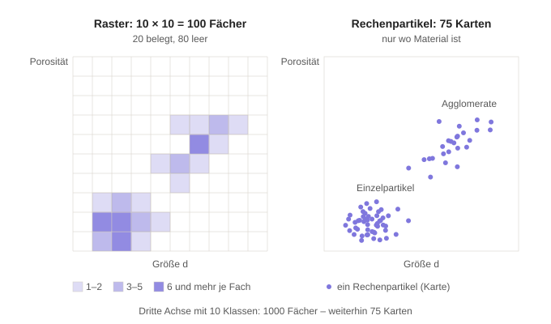
Abbildung: Dieselben 75 Rechenpartikel links in ein 10 × 10-Raster gezählt (80 Fächer bleiben leer), rechts als Punktwolke; eine dritte Achse verzehnfacht die Fächer, nicht die Karten.
- Art des Fehlers: Rechenpartikel sind Punkte im Eigenschaftsraum, keine Kugeln, die einen Bereich abdecken; jeder Punkt trägt exakte Werte. Das Raster verschmiert innerhalb einer Klasse (alle Partikel einer Zelle gelten als gleich, Diskretisierungsfehler), die Stichprobe rauscht (statistischer Fehler ∝ 1/√N). Beide sind Näherungen – mit wachsender Zahl der Eigenschaften bleibt nur die Stichprobe bezahlbar.
- Fraktale Dimension als mögliche Partikeleigenschaft: Zusammenhang Masse ↔ Gyrationsradius eines Agglomerats, m ∝ (Rg/a)Df mit Primärpartikelradius a; kompakte Kugel Df = 3, Agglomerate aus Stoßprozessen typisch etwa 1,8–2,2 (Literatur prüfen). Bestimmt den Stoßdurchmesser und damit den Koagulationskernel. Porosität und Df hängen zusammen; viele Zellen eines Gitters blieben deshalb physikalisch unmöglich und leer.
- Stellschraube (offen): gleiche Masse je Rechenpartikel (Masse gut aufgelöst, wenige große Partikel) oder gleiche Anzahl (Feinanteil gut aufgelöst); dazu Kotalczyk & Kruis (2017), „stochastic resolution“.
- Gewicht als „Paket“: Ein Rechenpartikel fasst viele echte Partikel mit (nahezu) gleichen Eigenschaften zusammen; innerhalb des Pakets gelten sie als identisch. Anders als eine Rasterzelle hat das Paket keine festen Grenzen und sitzt dort, wo Material ist. Das nachträgliche Zusammenlegen ähnlicher Rechenpartikel (Merging, Kotalczyk & Kruis 2017) ist genau dieses Bündeln.
- Wo Partikel nötig sind (Diskussion 14. Oktober 2026): Nur wo etwas auf einzelne Partikel mit mehr als einer Eigenschaft wirkt – Koagulation mehrerer Stoffe, Bruch eines Agglomerats, Beschichtung, Porosität/fraktale Dimension. Mahlen oder Agglomerieren eines einzigen Stoffs nach Größe allein geht auch im Kontinuum (so rechnet Dyssol).
- Nach der Unit nicht zurückwandeln: Zurück ins Raster zu zählen wirft genau die Information weg, für die die Partikel da sind (Zusammensetzung, Porosität …), und fügt bei jeder Umwandlung Verschmieren und Rauschen hinzu – in einem Kreislauf bei jedem Durchlauf erneut. Einmal Partikel, bleiben sie Partikel bis zum Outlet; erst die Anzeige zählt sie in Klassen.
- Zwei Varianten für den Beginn: (I) Mischform: Verteilung bis zur ersten partikelverändernden Unit, ab dort Partikel – jede Unit muss beide Formen gleichzeitig in einem Strom verarbeiten können (z. B. Merger mit Verteilung an Eingang 1 und Partikeln an Eingang 2). (II) Darstellung je Simulation wählbar: „Kontinuum“ (heutiger Code, rauschfrei, Dyssol-Vergleich) oder „Partikel“ (ab dem Inlet). Jede Unit hat dann zwei getrennte, einfache Rechenwege, die nie gemischt werden; derselbe Flowsheet lässt sich in beiden Darstellungen rechnen und vergleichen (Validierung). Vorschlag: (II).
- Inlet im Partikelmodus: Partikel direkt aus der analytischen Verteilung (Normal, Log-Normal, RRSB), nicht aus den 150 Rasterwerten. Statt zufälliger Ziehung Platzierung an Quantilen ui = (i − ½)/N, di = Q3−1(ui): deterministisch, nahezu rauschfrei, jedes Partikel trägt die gleiche Masse (mit Q0 statt Q3 die gleiche Anzahl). Normalverteilung bei d < 0 abschneiden (Anteil Φ(−4) = 3·10−5 beim Startprofil). Beispiel N = 5, Normalverteilung d0 = 100, σ = 25, 1 kg Sand (ρ = 2200 kg/m³) je Schritt: Die Masse wird in fünf Portionen zu je 20 % geteilt, jedes Partikel sitzt in der Mitte seiner Portion (u = 10, 30, 50, 70, 90 %) bei d = 68,0 / 86,9 / 100,0 / 113,1 / 132,0 µm, trägt 0,2 kg und vertritt 5,5·108 / 2,6·108 / 1,7·108 / 1,2·108 / 7,5·107 echte Partikel. Zufällige Ziehung könnte dagegen z. B. alle fünf zwischen 90 und 110 µm legen. Variante „geschichtete Stichprobe“: ui = (i − 1 + Ui)/N mit Ui ~ U(0, 1) – je Portion genau ein Partikel, aber nicht in jedem Schritt an derselben Stelle.
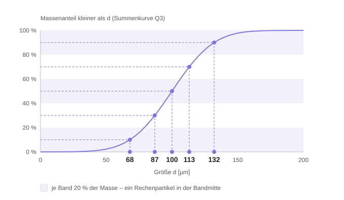
Abbildung: Quantil-Platzierung am Inlet – fünf gleich schwere Massenportionen (Bänder), je ein Rechenpartikel in der Mitte jeder Portion (Normalverteilung d0 = 100 µm, σ = 25 µm).
- Offen für den Partikelmodus: Splitter und Siebe – jedes Partikel mit geteiltem Gewicht in beide Ausgänge kopieren (exakt, aber die Partikelzahl verdoppelt sich je Teilung, im Kreislauf ohne Ende) oder jedes Partikel als Ganzes einem Ausgang zulosen (Zahl bleibt, dafür Rauschen); Begrenzung der Partikelzahl in Hold-ups und Kreisläufen. Diskussion und Vorschlag in 13.18.
13.9 Koagulationsereignis mit gewichteten Partikeln (Diskussion 15. Oktober 2026)
- Vorschlag aus der Diskussion: Zwei Pakete (z. B. Sand, Gewicht 10 000, und Kohle, Gewicht 10 000) koagulieren; ein zufälliger Koagulationsgrad f (z. B. 0,2) bestimmt, welcher Anteil des leichteren Pakets koaguliert; diese Zahl wird beiden Paketen abgezogen und bildet ein neues Paket mit der summierten Zusammensetzung.
- Richtig daran: Jedes Paar verbraucht ein echtes Partikel aus jedem Paket – beiden Paketen wird dieselbe Zahl abgezogen; das leichtere Paket begrenzt die Zahl der Paare; die Zusammensetzung des Agglomerats ist die Summe beider Partner.
- Gewicht des neuen Pakets = Zahl der Paare, nicht deren Summe: 2000 Sand + 2000 Kohle ergeben 2000 Agglomerate. Massenprobe: vorher 10 000 mS + 10 000 mK, nachher 8000 mS + 8000 mK + 2000 (mS + mK) – gleich. Die Zahl echter Partikel sinkt um 2000 = Zahl der Stöße.
- Zusammensetzung als Masse je Stoff, nicht als Stückverhältnis: Sand 100 µm (ρ = 2200) wiegt 1,15·10−9 kg, Kohle 100 µm (ρ = 1400) 0,73·10−9 kg; das Agglomerat „1 Sand + 1 Kohle“ ist zu 61 % Sand (nach Masse), „2 Sand + 1 Kohle“ zu 76 %. Die Zahl der Primärpartikel kann zusätzlich auf der Karte stehen (Detailstufe 1, Kapitel 15).
- Wie viel koaguliert, folgt aus der Physik, nicht aus einem frei gewählten Anteil: Erwartete Zahl der Stöße zwischen den Paketen i und j im Zeitschritt: ΔNij = βij·wi·wj·Δt / V (Kernel β, Gewichte w, Apparatevolumen V). Sie hängt von Größe und Stoff (Kernel), von der Konzentration (doppelt so viel Kohle → doppelt so viele Stöße je Sandkorn) und von Δt ab. Ein fester Anteil je Schritt macht das Ergebnis von Δt abhängig: 1 s mit Δt = 0,1 s → 0,810 = 11 % bleiben unkoaguliert, mit Δt = 0,05 s → 0,820 = 1,2 %.
- Kartenzahl: Erzeugt jedes Ereignis eine neue Karte, wächst die Zahl der Rechenpartikel ständig; rechnet man den Anteil für jedes Paar und jeden Schritt, entstehen bei 1000 Karten rund 500 000 neue je Schritt.
- Bekanntes Verfahren mit konstanter Kartenzahl (differenziell gewichtete Partikel, Zhao, Kruis & Zheng 2009, Gl. 17 – am Original geprüft am 15. Oktober 2026; dort „probabilistic coagulation rule“ genannt: im Mittel koagulieren min(wi, wj) Paare. Ihre „full coagulation rule“ meint dagegen, dass alle echten Partikel beider Pakete koagulieren – nur bei gleichen Gewichten widerspruchsfrei): Bei einem Ereignis koaguliert das ganze leichtere Paket. Seine Karte wird zum Agglomerat (Gewicht wmin, Massen addiert), das schwerere Paket verliert wmin. Bei gleichen Gewichten wird das Agglomerat auf beide Karten mit je w/2 verteilt. Damit die mittlere Stoßrate stimmt, tritt das Ereignis für das Paar (i, j) mit der Rate rij = βij·max(wi, wj)/V auf (je Ereignis werden wmin echte Stöße umgesetzt). Der Zufall steckt im Zeitpunkt (τ = −ln(u)/R, R = Σ rij, siehe 5.4) und in der Wahl des Paares (Wahrscheinlichkeit rij/R, praktisch per Akzeptanz-Verwerfung).
- Beispiel mit diesem Verfahren: Sand (10 000) + Kohle (10 000), gleiche Gewichte → zwei Karten „Sand + Kohle“ mit je 5000. Weiter mit einer Sandkarte (10 000): Sand (10 000) + „Sand + Kohle“ (5000) → die leichtere Karte wird „2 Sand + 1 Kohle“ (5000), die Sandkarte behält 5000. Massenprobe: 15 000 mS + 5000 mK vorher wie nachher; echte Partikel 15 000 → 10 000 (5000 Stöße); Kartenzahl unverändert 2.
13.10 Zufall im Koagulationsgrad, Teil-Koagulation und Begrenzung der Partikelzahl (Diskussion 15. Oktober 2026)
- Koagulationsgrad zufällig um den Kernel-Wert: Physikalisch begründet, aber die Breite ist nicht frei wählbar. Stöße sind zufällige Einzelereignisse; ihre Zahl im Zeitschritt ist Poisson-verteilt mit Mittelwert ΔN = β·wi·wj·Δt/V und Standardabweichung √ΔN (für großes ΔN annähernd normalverteilt; für kleines ΔN Poisson, da die Normalverteilung negative Werte liefern kann). Relative Schwankung 1/√ΔN: 10 % bei ΔN = 100, 1 % bei 104, 0,1 % bei 106. In der chemischen Kinetik heißt dieses Vorgehen τ-Leaping (Gillespie 2001), die Normalnäherung chemische Langevin-Gleichung (Gillespie 2000). Die Smoluchowski-Gleichung beschreibt den Mittelwert, das Marcus-Lushnikov-Modell den stochastischen Prozess mit endlich vielen Partikeln; der Unterschied zählt nur bei kleinen Partikelzahlen (z. B. Nanopartikel in kleinen Volumina, seltene große Agglomerate).
- Physikalisches Rauschen ↔ MC-Rauschen: Bei gewichteten Partikeln setzt ein MC-Ereignis wmin echte Stöße auf einmal um; die relative Streuung der umgesetzten Stöße ist √(w/ΔN) statt 1/√ΔN, also um √w größer als die physikalische. Beispiel w = 106, ΔN = 108: MC-Rauschen 10 %, physikalisch 0,01 %. Bei Pulvern (10 g Sand mit 100 µm sind 8,7·106 Körner) ist die physikalische Stoßstreuung praktisch vernachlässigbar; ein frei gewählter Streuparameter würde Rauschen ohne physikalische Grundlage hinzufügen.
- Teil-Koagulation (nicht das ganze leichtere Paket): Kleinere Sprünge, weniger Rauschen je Ereignis; aber wird in jedem Schritt für jedes Paar ein Anteil umgesetzt, entsteht je Paar eine neue Karte (bei 1000 Karten rund 500 000 je Schritt). Das läuft auf ein deterministisches Partikelverfahren hinaus, das in jedem Schritt stark reduziert werden muss. Zwischenwege mit konstanter Kartenzahl, bei denen nur eine Karte verändert wird und die andere bleibt: Mass-Flow-Algorithmus (Eibeck & Wagner 2001) und stochastische gewichtete Algorithmen (SWA = Stochastic Weighted Algorithm, durchnummeriert SWA1 bis SWA4; Patterson, Wagner & Kraft 2011, am Original geprüft: Karte i wird zu (xi + xj) mit neuem Gewicht c, Karte j bleibt unverändert; SWA1 c = u·v/(u + v), SWA2 c = u/2, SWA3 c = u·mx/(mx + my), SWA4 mit Wurzelgewichten; erhaltend im Mittel, für jede Erhaltungsgröße gibt es ein Familienmitglied, das sie exakt erhält). Fractional MC time steps: Kotalczyk & Kruis 2018, siehe 5.4 und 13.12.
- Begrenzung der Partikelzahl – Verfahren:
- Random Removal: zufällig ausgewählte Karten entfernen, Gewichte der übrigen hochskalieren.
- Merging (Kotalczyk & Kruis 2017): ähnliche Karten zusammenlegen; Masse und Anzahl exakt, Eigenschaften werden gemittelt.
- Russisches Roulette und Splitting (Gewichtsfenster, aus dem Neutronen- und Strahlungstransport, Kahn & Harris 1951): Karten mit sehr kleinem Gewicht überleben mit Wahrscheinlichkeit p und erhalten das Gewicht w/p, sonst werden sie entfernt; sehr schwere Karten werden in mehrere aufgeteilt. Erwartungstreu, Eigenschaften bleiben exakt, hält alle Gewichte in einem Fenster.
- Resampling aus Partikelfiltern (multinomial, stratifiziert, systematisch; Kitagawa 1996): aus N Karten M neue ziehen, Wahrscheinlichkeit proportional zum Gewicht, danach alle mit gleichem Gewicht. Systematisches Resampling ist die Quantil-Idee vom Inlet, angewandt auf die Gewichte. Eigenschaften bleiben exakt (Kopien), häufige Karten werden vervielfacht, seltene verschwinden („Verarmung“).
- Konstante Kartenzahl (Smith & Matsoukas 1998) für die umgekehrte Richtung: Koagulation verringert die Kartenzahl, Karten werden verdoppelt und ihre Gewichte halbiert.
- Natürlicher Austrag: Im durchmischten Behälter verlassen Karten den Apparat (zufällig mit Wahrscheinlichkeit Δt/τV oder durch Verkleinern aller Gewichte); der Zulauf bringt je Schritt Nein neue.
- Idee für einen eigenen Weg: Teil-Koagulation (rauscharm) mit systematischem Resampling oder Gewichtsfenstern kombinieren und gegen gewichtete MC mit Merging an den analytischen Fällen aus 13.6 vergleichen. Vorher Literatur prüfen, ob Resampling und Gewichtsfenster für Populationsbilanzen schon verwendet wurden.
13.11 Ganzes Paket oder Teil-Koagulation: Rauschen, Restkoagulation, Berechnung der Stöße (Diskussion 15. Oktober 2026)
- Tendenz: Zunächst die einfache Annahme „das ganze leichtere Paket koaguliert“ (konstante Kartenzahl, die Menge folgt aus dem Gewicht des leichteren Pakets).
- Anschauung: Busse statt einzelner Fahrgäste – sollen im Mittel 20 % der Sandkörner je Schritt ankleben und fahren alle in einem Bus (eine Karte, Gewicht 10 000), dann fährt der ganze Bus etwa in jedem fünften Schritt, sonst keiner: im Mittel richtig, im einzelnen Lauf ruckelig. Viele kleine Busse (viele Karten mit kleinem Gewicht) ergeben je Schritt nahezu gleichmäßig 20 %. Die Stoßzahl selbst schwankt wie die Kundenzahl an einer Kasse (im Mittel 100 je Stunde, tatsächlich etwa 90 bis 110, Streuung √100 = 10); wie viele Stöße zu erwarten sind, hängt wie das Gedränge auf einer Party davon ab, wie viele gerade im Raum sind, wie groß der Raum ist, wie wild sie sich bewegen, wie groß und wie klebrig sie sind.
- Geht dabei Information verloren? Nicht systematisch: Das Ereignis „alles oder nichts“ tritt entsprechend seltener auf, im Mittel stimmt die Zahl der Stöße zu jedem Zeitpunkt. Was entsteht, ist Rauschen. Relative Streuung der umgesetzten Stöße je Schritt √(w/ΔN) (w = Gewicht der Pakete, ΔN = erwartete Stöße). Beispiel ΔN = 2000 je Schritt: w = 10 000 → 224 % (ein Ereignis in etwa jedem fünften Schritt), w = 100 → 22 %, w = 10 → 7 %, w = 1 → 2,2 % (= physikalische Poisson-Streuung). Mehr Karten je Teilpopulation verringern das Rauschen.
- „Mit der Zeit koaguliert ohnehin alles“ gilt nicht: Im Flowsheet verlässt Material den Apparat vorher; wie weit es koaguliert ist, ist gerade das Ergebnis. Durchmischter Behälter, konstanter Kernel, stationär: N/Nein = (√(1 + 2x) − 1)/x mit x = β0·τV·Nein – für x = 1 bleiben 73 % der Partikel, für x = 10 36 %.
- Wann die Ganz-oder-gar-nicht-Annahme stört: nicht bei wenigen echten Partikeln (dann ist w klein bis 1, jede Karte ist ein echtes Partikel, das ohnehin nur ganz koagulieren kann), sondern wenn eine wichtige Teilpopulation durch wenige Karten mit großem Gewicht vertreten ist: Spurenstoff, grobes Ende der Verteilung, Beginn der Keimbildung. Dagegen helfen Gewichtungen, die dort mehr Karten ansetzen (Mass-Flow-Algorithmus, stochastische Auflösung).
- Streuung nur aus ΔN? Für die Stoßstatistik ja: Poisson mit Varianz = ΔN; mit Haftwahrscheinlichkeit α weiterhin Poisson mit Mittel α·ΔN. Andere Streuquellen sind eigene Modelle: schwankende Bedingungen (Scherrate, Turbulenz, Feuchte) als Prozessschwankung, z. B. ein OU-Prozess auf einem Kernel-Parameter wie beim Splitter; dazu das numerische MC-Rauschen.
- Berechnung von ΔN: Kette Zulaufströme → Hold-up im Apparat → Anzahlkonzentration c = w/V → Kernel β → ΔNij = βij·ci·cj·V·Δt. Die Ströme füllen den Hold-up, entscheidend ist, was gerade im Apparat ist. Der Kernel hängt vom Mechanismus ab: konstant (Validierung), Brownsch (T, Gasviskosität, mittlere freie Weglänge aus der Materialdatei), Scherung β = (4/3)·G·(ri + rj)³ (Scherrate G des Apparats), turbulent (Dissipationsrate ε, kinematische Viskosität ν), Sedimentation (Dichten); dazu die Haftwahrscheinlichkeit α, die vom Stoffpaar abhängen kann. Beispiel Scherung: 1 kg Sand mit 100 µm in V = 10 L, G = 100 s−1: β = 1,3·10−10 m³/s, c = 8,7·1010 m−3, jedes Korn stößt etwa 12-mal je Sekunde, insgesamt ½·β·c²·V ≈ 5·109 Stöße je Sekunde; in Δt = 0,1 s also 5·108, physikalische Streuung 0,005 % (α = 1, nur zur Veranschaulichung).
13.12 Literaturrecherche gewichtete MC-Verfahren (15. Oktober 2026)
- Umfang: Websuche, Abstracts und Literaturlisten; vollständig gelesen nur das Preprint Patterson & Kraft (Cambridge c4e-Preprint 47). Nicht zugänglich: Volltexte Zhao, Kruis & Zheng (2009, 2010), Kotalczyk & Kruis (2018); Dissertation Kotalczyk (über 10 MB, nicht geladen).
- Verfahren mit kleinerem Agglomeratgewicht und konstanter Kartenzahl sind etabliert (genauer: einseitige Koagulation, siehe 13.13): Stochastic Weighted Particle Method (Rjasanow & Wagner 1996), Mass-Flow-Algorithmus (Eibeck & Wagner 2001), gewichtete Algorithmen mit Gewichtsübertragung (Patterson & Kraft, Preprint; Patterson, Wagner & Kraft 2011): Bei einem Stoß wird eine Karte durch das Agglomerat mit verkleinertem Gewicht ersetzt, der Partner bleibt. Zwei Regeln: w1 mit 1/w = 1/u + 1/v (harmonisch) und w2 mit w = u/2 (Halbieren); im Flammentest lag die Varianz des zweiten Moments bei w2 mehr als zehnmal höher als bei w1. Erweitert auf Bruch und räumlich verteilte Systeme mit Transport zwischen Zellen (Lee, Patterson, Wagner & Kraft 2015) – vergleichbar mit Units im Flowsheet.
- Zwei und mehr Stoffe: Zhao, Kruis & Zheng (2010): differenziell gewichtete MC für Zweikomponenten-Koagulation; Zhao, Kruis & Zheng (2011): aggregatives Mischen von Nanopartikeln in Zweikomponentensystemen; Liu & Chan (2018): Mehrkomponenten-Aerosoldynamik mit differenziell gewichtetem Operator-Splitting. Direkt relevant für Sand + Kohle.
- Flowsheets: Kotalczyk & Kruis (2018), „Fractional Monte Carlo time steps for the simulation of coagulation for parallelized flowsheet simulations“ (Zitat bestätigt, Inhalt nicht gelesen); Dissertation Kotalczyk, „Parallel Monte Carlo Algorithms for Flowsheet Simulations based on the Population Balance Equation“ (Universität Duisburg-Essen).
- Partikelzahl begrenzen: Resampling auf konstante Zahl (Smith & Matsoukas 1998; Lin, Lee & Matsoukas 2002), Verdoppeln (Liffman 1992; Maisels, Kruis & Fissan 2004), konservative Reduktion der Partikelzahl (Vikhansky & Kraft 2005), globale Rekonstruktion bzw. Resampling gewichteter Populationen für Koagulation und Bruch (Chemical Engineering Science 2023; Powder Technology 2022, 2024 – Autoren noch nachtragen). Russisches Roulette und Gewichtsfenster sind Standard im Strahlungstransport. Korrektur nach Lektüre von Zhao, Kruis & Zheng (2009, Abschnitt 3.1): Deren „shift action“ wendet dasselbe Prinzip auf Größenintervalle an – liegen in einem Intervall weniger als Nmin Karten (dort 100), wird jede Karte in gleich schwere Teile geteilt; liegen mehr als Nmax (dort 600) darin, wird jede Karte mit Wahrscheinlichkeit (N − Nmax)/N entfernt und die übrigen werden im Gewicht korrigiert.
- Quantil-Idee während der Rechnung: Quasi-Monte-Carlo für die Smoluchowski-Gleichung (Lécot & Wagner 2004): Partikel in jedem Schritt nach Masse sortiert, quasi-zufällige Zahlen statt Zufallszahlen, kleinerer Fehler als MC; erweitert auf Aerosoldynamik (Lécot & Tarhini 2007) und Koagulation mit Bruch (Lécot, L'Ecuyer, El Haddad & Tarhini 2019); dazu eine geschichtete MC-Variante (Winter Simulation Conference 2012).
- τ-Leaping für Koagulation: In dieser Suche keine direkte Anwendung gefunden; verwandt sind die zeitgesteuerten (statt ereignisgesteuerten) gewichteten MC-Verfahren.
- Dissertation Kotalczyk (Kap. 4, gelesen 15. Oktober 2026): (a) Konstante-Kartenzahl-Verfahren im Vergleich: Fictitious Particle (FP) und die eigene „stochastische Auflösung“ (SR) setzen die Regel „das ganze leichtere Paket koaguliert“ um – je Paar gedachtes Systemvolumen 1/Wmin, Rate Rij = βij·max(Wi, Wj); bei gleichen Gewichten wird das Agglomerat auf zwei Karten mit halbem Gewicht verteilt. Die SWA-Varianten (Teil-Koagulation, Partner bleibt) erhalten das Gesamtvolumen nur im Mittel. Rauschen der Anzahlkonzentration σN/N mit 1000 Karten (freimolekularer Bereich, ein Stoff): SR 0,011, Constant-Number mit gleichen Gewichten 0,016, SWA1/3 0,039, SWA4 0,043, SWA2 0,187; SR erreicht mit 1000 Karten die Genauigkeit, für die SWA 10 000 Karten braucht. (b) Fractional MC time steps (Kap. 4.2, siehe 5.4). (c) Transport zwischen Units (Kap. 4.6): deterministischer Austrag (Gewichte exakt aufteilen, neue Karten mit gleichen Eigenschaften in der Ziel-Unit, danach Merging oder Random Removal) oder stochastischer Austrag (jede Karte wechselt mit Wahrscheinlichkeit P, weniger Karten zu verschmelzen) – genau die offene Splitter-Frage aus 13.8. (d) Merging mit erlaubtem Merging-Fehler, auf der GPU parallel (Kap. 4.4).
- Lesereihenfolge (Vorschlag): (1) Dissertation Kotalczyk, Kapitel zu Gewichtung, Merging und Zeitschritten; (2) Zhao, Kruis & Zheng 2010 (zwei Stoffe); (3) Patterson, Wagner & Kraft 2011 (Regel w1); (4) Lécot & Wagner 2004 (Quasi-MC).
13.13 Wann lohnt sich Teil-Koagulation? (Diskussion 15. Oktober 2026)
- Frage: Wenn Rauschen nur in Sonderfällen stört (wichtige Gruppe auf wenigen Karten, wenige Stöße bei kurzer Verweilzeit), ist dann die Regel „ganzes leichteres Paket“ nicht fast immer im Vorteil?
- Befund aus der Literatur: Ja, bei gleicher Kartenzahl rauscht sie weniger. Dissertation Kotalczyk (Tab. 4.5, ein Stoff, freimolekularer Bereich): Ganz-Paket-Regel (SR) mit 1000 Karten σN/N = 0,011 in 7,5 s; SWA1/3 braucht 10 000 Karten für 0,013 in 160 s – rund 20-mal mehr Rechenzeit für etwas schlechtere Genauigkeit. Ursache: Die Ganz-Paket-Regel erhält die Masse bei jedem Ereignis exakt; SWA lässt den Partner unverändert und erhält die Masse nur im Mittel, was zusätzliches Rauschen bringt. Teil-Koagulation mit neuer Karte je Paar und Schritt wächst dagegen mit N2.
- Die kritischen Fälle löst man gezielter: Statt jede Koagulation feiner aufzulösen, bekommt die kritische Gruppe mehr Karten – Mindest- und Höchstzahl an Karten je Größenintervall (Zhao, Kruis & Zheng 2009: Teilen, wo zu wenige, Zulosen-Entfernen, wo zu viele), bei mehreren Stoffen sinngemäß auch je Stoff- oder Agglomerattyp. Das kostet nur dort Rechenzeit, wo sie gebraucht wird.
- Wie oft sind die kritischen Fälle? Allgemein nicht angebbar, es hängt an der Frage, die man stellt. Für Gesamtmasse, mittlere Größe und den Hauptteil der Verteilung reicht die Ganz-Paket-Regel mit genug Karten. Kritisch sind seltene, aber wichtige Dinge: Spurenstoffe, die größten Agglomerate (Grobgut für ein Sieb), der Beginn der Koagulation, Anfahrvorgänge, sehr kurze Verweilzeiten. Bei schwacher Koagulation ist zwar das relative Rauschen der koagulierten Menge groß, ihr Anteil an der Verteilung aber klein; es zählt nur, wenn gerade diese Agglomerate das Ergebnis sind.
- Rauschen messen statt raten: Die Mehrfachläufe (Kapitel 10) liefern die Standardabweichung jeder Ergebnisgröße. Ist sie für die interessierende Größe zu hoch, bekommt die zugehörige Gruppe mehr Karten.
- „Nicht alles koaguliert“ spricht nicht für Teil-Koagulation: Die Aussage betrifft die echten Partikel. „Ganzes Paket“ bezieht sich auf eine Karte, nicht auf alle Partikel im Apparat. Dass nur ein Teil koaguliert, bildet die Ganz-Paket-Regel über den Anteil der Karten ab (von 100 Sandkarten sind beim Austritt etwa 20 zu Agglomeraten geworden, 80 nicht), die Teil-Koagulation über den Anteil des Gewichts jeder Karte. Bild: 30 % Helligkeit in einem Raum entweder durch 3 von 10 Lampen an (Schalter) oder durch 10 Lampen auf 30 % gedimmt (Dimmer) – mit genug Lampen gleich hell. Eine Karte kann ohnehin nicht „teilweise Agglomerat“ sein, da sie gleiche Partikel beschreibt; Teil-Koagulation muss die Karte daher in einen koagulierten und einen unveränderten Teil aufspalten.
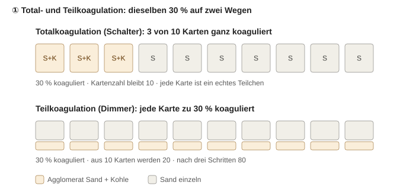
Abbildung: Total- und Teilkoagulation bilden dieselben 30 % ab – oben über den Anteil der Karten, unten über den Anteil jeder Karte; die Teilkoagulation spaltet dafür jede Karte auf.
- SWA einfach erklärt (Diskussion 15. Oktober 2026): SWA ist keine Teil-Koagulation im Sinne von „ein Anteil f bildet eine neue Karte“, sondern eine einseitige Koagulation. Bei einem Ereignis wird nur eine Karte umgeschrieben – sie wird zum Agglomerat mit kleinerem Gewicht (SWA1 bei gleichen Gewichten: w/2); die Partnerkarte bleibt unverändert, als wären ihre Partikel nicht verbraucht worden. Beispiel Sand (10 000) + Kohle (10 000): Fall A – Sandkarte wird „S+K, 5000“, Kohle bleibt 10 000 → Sand 5000, Kohle 15 000; Fall B (gleich wahrscheinlich) – umgekehrt. Erst im Mittel über A und B stimmen beide Stoffmengen. Wie eine Buchung nur auf einem Konto, deren Gegenbuchung irgendwann zufällig folgt. Die Ereignisse sind halb so groß, treten dafür doppelt so oft auf (Rate je geordnetem Paar ∝ βij·wj). Auch SWA3, das die Gesamtmasse je Ereignis exakt erhält, verschiebt Masse zwischen den Stoffen. Daher mehr Rauschen und – bei mehreren Stoffen – schwankende Stoffbilanzen. Entwickelt wurde SWA für Ruß (ein Stoff, Interesse an großen Partikeln); Vorteile sind die frei wählbare Gewichtsfunktion, mit der sich die Auflösung zu großen Partikeln verschieben lässt, und die einfache Buchführung.
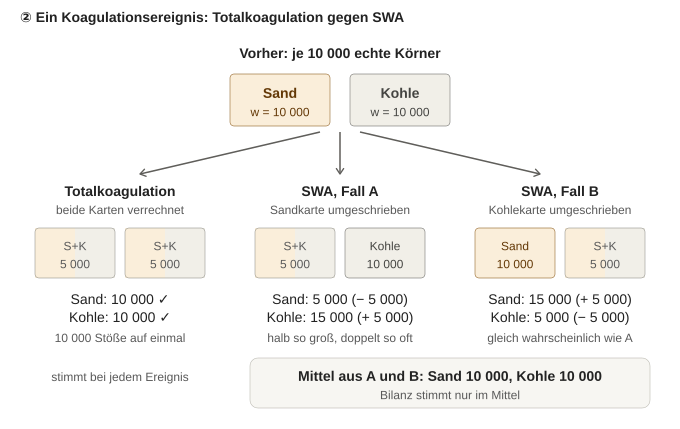
Abbildung: Ein Ereignis zwischen einer Sand- und einer Kohlekarte – Totalkoagulation verrechnet beide Karten (Bilanz stimmt immer), SWA schreibt nur eine Karte um (Bilanz stimmt nur im Mittel über die Fälle A und B).
- Vorteile der Ganz-Paket-Regel im Einzelnen: (1) Kartenzahl bleibt konstant; Teil-Koagulation verdoppelt sie bei jeder Aufspaltung (10 → 20 → 40 → 80 nach drei Schritten), und die nötige Reduktion bringt entweder wieder Rauschen (Random Removal) oder Mittelung (Merging). (2) Bei mehreren Stoffen mittelt Merging Zusammensetzungen: aus „1 Sand + 1 Kohle“ und „2 Sand + 1 Kohle“ wird eine Karte „1,5 Sand + 1 Kohle“, die es physikalisch nicht gibt – genau die Information, für die die Partikel da sind. Bei der Ganz-Paket-Regel beschreibt jede Karte stets eine tatsächlich entstandene Zusammensetzung. (3) Masse bei jedem Ereignis exakt erhalten. (4) Gemessen weniger Rauschen bei gleichem Aufwand (Kotalczyk, Tab. 4.5). (5) Einfach: keine zusätzlichen Regeln für Anteile und Zusammenlegen, passt zur ereignisgesteuerten Rechnung und zur GPU.
- Wo Teil-Koagulation im Prinzip besser ist: Wenn eine Gruppe nur sehr wenige Karten hat und man keine weiteren spendieren kann, sind ihre Sprünge kleiner. Diesen Fall löst das Teilen von Karten (13.12, „shift action“) aber gezielter.
- Tendenz: Ganz-Paket-Regel (Zhao, Kruis & Zheng 2009 bzw. stochastische Auflösung nach Kotalczyk & Kruis 2017) plus Mindest-/Höchstzahl an Karten je Gruppe; Teil-Koagulation höchstens später als Vergleich, falls ein konkreter Fall Probleme zeigt.
Übersicht: Total- und Teilkoagulation mit Formeln
ΔNij = βij · wi · wj · Δt / V (erwartete Stöße zwischen den Paketen i und j in Δt; w = Zahl der echten Partikel je Karte, V = Apparatevolumen)
physikalische Streuung σ = √ΔN, relativ 1/√ΔN · Fehler eines geschätzten Mittelwerts ∝ 1/√NMC (Karten) bzw. ∝ 1/√(Zahl der Läufe)
| Totalkoagulation (ganzes leichteres Paket) | Teilkoagulation mit neuer Karte | Einseitige Koagulation SWA (Partner bleibt) |
|---|
| Regel je Ereignis | leichtere Karte → (xi + xj, wmin), schwerere behält x mit wmax − wmin; bei wi = wj beide → (xi + xj, w/2) | Anteil f koaguliert: neue Karte (xi + xj, f·wmin), beide verlieren f·wmin | Karte i → (xi + xj, c), z. B. c = u·v/(u + v) (SWA1) oder u/2 (SWA2); Karte j unverändert |
| Wie viel und wann | Ereignisrate rij = βij·max(wi, wj)/V; Wartezeit τ = −ln(u)/R mit R = Σ rij; im Mittel ΔNij Stöße je Schritt | f = ΔNij/wmin je Schritt (deterministisch) oder Stoßzahl zufällig mit σ = √ΔNij | Ereignisrate aus Kernel und Gewichten (Patterson, Wagner & Kraft 2011) |
| Kartenzahl | konstant N | +1 je Paar und Schritt (bis N(N−1)/2); bei wiederholter Aufspaltung N·2k (10 → 20 → 40 → 80) | konstant N |
| Masse | exakt je Ereignis | exakt je Ereignis | nur im Mittel |
| Rauschen der koagulierten Menge je Schritt | relativ √(w/ΔN): bei ΔN = 2000 und w = 10 000 → 224 %, w = 100 → 22 %, w = 1 → 2,2 % | aus der Koagulation selbst ≈ 0 (deterministisch) bzw. 1/√ΔN (Poisson); Rauschen oder Mittelung kommt über die nötige Reduktion zurück | höher als Total bei gleicher Kartenzahl: σN/N = 0,039 gegen 0,011 mit 1000 Karten (Kotalczyk, Tab. 4.5) |
| Rechenaufwand | wenige Schritte je Ereignis (Paarauswahl per Akzeptanz-Verwerfung); Zahl der Ereignisse ≈ Σ ΔNij/wmin; 1000 Karten: 7,5 s | alle Paare in jedem Schritt (∝ N2) plus Merging | wie Total, braucht aber rund 10-mal so viele Karten für ähnliche Genauigkeit: 160 s |
| Mehrere Stoffe | jede Karte ist eine tatsächlich entstandene Zusammensetzung | Merging mittelt Zusammensetzungen; nur Gleiches zusammenlegen → Nischen vermehren sich | wie Total, Masse aber nur im Mittel |
| Schwäche | Gruppen mit wenigen Karten springen (ganz oder gar nicht) → Karten teilen (Nmin ≤ Nk ≤ Nmax, Zhao et al. 2009) | wachsende Kartenzahl, Reduktion nötig | mehr Rauschen |
| Literatur | Zhao, Kruis & Zheng 2009; Kotalczyk & Kruis 2017 (stochastische Auflösung) | eigener Ansatz; verwandt mit deterministischen Partikelverfahren | Patterson, Wagner & Kraft 2011 |
- Merging nur bei gleicher Zusammensetzung (Diskussion 15. Oktober 2026): Vermeidet große Mittelungen wie „1,5 Kohle“. Exakt gleiche Karten gibt es aber praktisch nie, weil die Körner verschieden groß sind (Sand 68 µm + Kohle 132 µm hat eine andere Zusammensetzung als Sand 100 µm + Kohle 100 µm); Merging braucht deshalb eine Toleranz (Kotalczyk: erlaubter Merging-Fehler εmerge, z. B. 10−4). Die Toleranz wirkt wie eine lokale Rasterweite: Je kleiner, desto mehr Nischen bleiben getrennt.
- Nischen und Raster-Explosion: Teil-Koagulation mit strengem Merging erzeugt mit jedem Schritt neue Typen; ungebremst führt das zurück zur Lage des Kontinuums mit einer Karte je möglicher Kombination – nur auf die tatsächlich entstandenen Kombinationen beschränkt. Die Totalkoagulation verhindert das: Bei fester Kartenzahl N kann es nie mehr als N Nischen geben; seltene Nischen sind durch wenige Karten vertreten (mal vorhanden, mal nicht) – das ist Rauschen, kein Speicherproblem. Merging bleibt im Flowsheet dennoch für Zuläufe und Transport zwischen Units nötig (Kotalczyk, Kap. 4.6), dann mit Toleranz und nur innerhalb gleicher Stoffkombination.
13.14 Stochastische Auflösung nach Kotalczyk & Kruis (2017) – einfach erklärt
- Problem: Wie stellt man sich einen Stoß zwischen zwei Karten vor, die verschieden viele echte Partikel vertreten (z. B. Sand 10 000, Kohle 2000)?
- Idee „Lupe“: Für jedes Kartenpaar denkt man sich beide Karten in gleich schwere Punkte zerlegt; jeder Punkt steht für sF echte Partikel. Die stochastische Auflösung ist 1/sF: je kleiner sF, desto feiner die Lupe. In diesem Bild stoßen zwei gleich schwere Punkte – ein gewöhnliches, gut verstandenes MC-Ereignis. Danach wird zurückübersetzt: Es entsteht eine Karte mit dem Gewicht sF, und beide Partner verlieren sF (Paper I, Gl. 7). Die Ereignisrate des Paares ist βij·Wi·Wj/sF (Gl. 6).
- Die Lupe entscheidet über die Methode: sF < Wmin – es bleibt von beiden Karten etwas übrig, das Agglomerat braucht eine neue Karte (Teilkoagulation, Ereignisse häufiger und kleiner). sF = Wmin – die leichtere Karte wird ganz verbraucht und nimmt das Agglomerat auf, keine neue Karte (Totalkoagulation, konstante Kartenzahl, Rate βij·Wmax, Gl. 9 und 10); bei gleichen Gewichten wird das Agglomerat auf beide Karten mit W/2 verteilt. sF > Wmin – nicht möglich, die leichtere Karte wäre nur ein Bruchteil eines Punkts. Die Totalkoagulation ist also die gröbste Lupe, die ohne neue Karten auskommt.
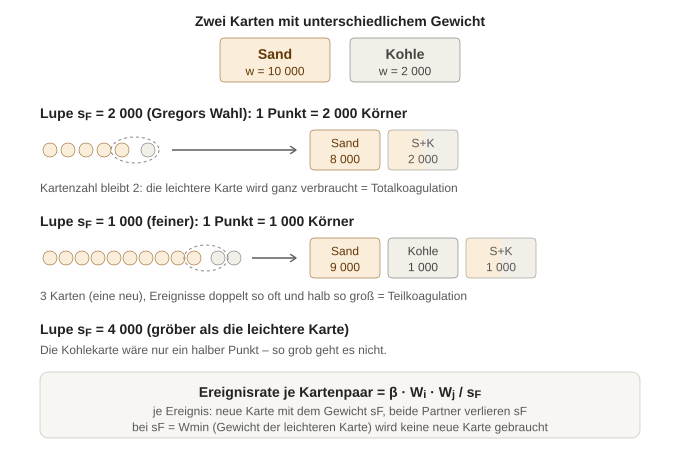
Abbildung: Dasselbe Kartenpaar mit zwei Lupen – mit sF = Wmin (Totalkoagulation) bleibt die Kartenzahl gleich, mit feinerer Lupe (Teilkoagulation) entsteht eine neue Karte; eine gröbere Lupe ist nicht möglich.
- Was das Konzept bringt: dieselbe Regel wie Zhao, Kruis & Zheng (2009), aber mit symmetrischer Rate (dieselbe für i–j und j–i) und anschaulicher Herleitung; es erklärt, warum SWA stärker rauscht (Dissertation Kotalczyk, Anhang C), und lässt sich auf Keimbildung und Transport übertragen. sF darf für jedes Paar anders gewählt werden (Paper I, Fußnote 1); daraus lässt sich eine ganze Familie von Verfahren bauen.
- Anwendung in StoSiS: (1) Die Totalkoagulation wird genau so umgesetzt: Rate βij·Wmax, Ereignis nach Gl. 7–9, Massen je Stoff werden addiert – bei mehreren Stoffen ändert sich an der Regel nichts. (2) Die Lupe ist der Schalter zwischen Total- und Teilkoagulation: sF = Wmin/k mit k = 1 als Standard; k > 1 gibt eine feinere Auflösung mit neuen Karten (dann ist Merging nötig). (3) Idee: eine feinere Lupe nur für kritische Gruppen (13.15) – vorher prüfen, ob das in der Literatur schon so gemacht wurde.
- sF genauer – Einheiten (Diskussion 15. Oktober 2026): Paper I rechnet mit Konzentrationen: Gewichte W und sF in echten Partikeln je m³ Apparat. Die Auflösung 1/sF hat die Einheit m³ und lässt sich als gedachtes Probevolumen Vsys lesen, in dem jeder Punkt genau ein echtes Partikel ist; bei der Totalkoagulation Vsys = 1/Wmin – das Volumen, in dem von der selteneren Karte genau ein Partikel steckt (Dissertation Kotalczyk, Gl. 4.2). In der StoSiS-Schreibweise mit Anzahlen im Apparat (w = W·V, s = sF·V): Punkte je Karte ni = wi/s; Ereignisrate rij = βij·wi·wj/(s·V); je Ereignis s echte Stöße; Ergebnis neue Karte mit s, beide Partner verlieren s.
- In welchem Bereich liegt sF? Kein fester Wert: Bei der Totalkoagulation ist sF für jedes Paar das Gewicht der leichteren Karte und liegt damit im Bereich der Kartengewichte. Faustwert: s ≈ (Zahl der echten Partikel im Apparat)/NMC. Beispiel 1 kg Sand mit 100 µm in 10 L (8,7·108 Körner), 10 000 Karten: s ≈ 8,7·104 Körner je Punkt bzw. sF ≈ 8,7·106 m−3. Gregors Aerosolbeispiel: Gewichte 108 bis 1010 cm−3 (1014 bis 1016 m−3). Bei Karten gleicher Masse ist das Gewicht ∝ 1/d³: zwischen 68 und 132 µm Faktor 7,3; mit Agglomeraten bis 300 µm Faktor 86.
- Wie wird sF bestimmt? Bei der Totalkoagulation wird es nicht gewählt, sondern folgt aus den Gewichten (sF = Wmin). Die Gewichte folgen aus der Kartenzahl NMC, aus der Aufteilung am Inlet (gleiche Masse oder gleiche Anzahl je Karte: w = mKarte/m(d)) und aus der Vorgeschichte (Koagulation: Wmax − Wmin bzw. W/2; Merging: Summe; Austrag). Die eigentliche Stellschraube ist NMC; nur bei gewollter Teilkoagulation kommt der Faktor k hinzu: sF = Wmin/k.
- Was sF beeinflusst (Beispiel: Wmin = 1000, ΔN = 100 000 erwartete Stöße im Schritt):
| Variante | s | Ereignisse je Schritt = ΔN/s | Rauschen je Schritt = √(s/ΔN) | neue Karten je Schritt | Speicher |
|---|
| Totalkoagulation, k = 1 | 1000 | 100 | 10 % | 0 | konstant |
| feinere Lupe, k = 4 | 250 | 400 | 5 % | 400 | wächst, Merging nötig |
| feinere Lupe, k = 16 | 62,5 | 1600 | 2,5 % | 1600 | wächst stark |
| 4-mal mehr Karten, k = 1 | 250 (Gewichte 4-mal kleiner) | 400 | 5 % | 0 | 4-fach, aber konstant |
Rechenzeit ∝ Zahl der Ereignisse ∝ 1/s. Dasselbe Rauschen lässt sich also über eine feinere Lupe (Karten wachsen ständig) oder über mehr Karten (Speicher fest) erreichen; mehr Karten verbessern zusätzlich die Abbildung der ganzen Verteilung.
- Bewertung für StoSiS (15. Oktober 2026): Die Lupe ist nur Gregors Herleitung dafür, dass die Rate β·wmax/V stimmt; als Stellschraube wird sie nicht gebraucht und macht die Beschreibung unnötig kompliziert. Für StoSiS genügt: Bei einem Stoß koaguliert das ganze leichtere Paket, das schwerere verliert dieselbe Zahl; Ereignisrate β·wmax/V. Das Rauschen wird über die Kartenzahl gesteuert (letzte Zeile der Tabelle: gleiche Wirkung ohne neue Karten). Zur Klarstellung: Der Fall, in dem die leichtere Karte nur ein Bruchteil eines Punkts wäre (sF > Wmin), ist bei Gregor ausdrücklich ausgeschlossen.
13.15 Kritische Fälle erkennen, Warnung und wählbare Koagulationsregel (Diskussion 15. Oktober 2026)
- Faustformel: ng ≈ Ng · Pg – erwartete Zahl der Koagulationsereignisse einer Gruppe g (Stoff, Größenbereich, Agglomerattyp) je Verweilzeit, mit Ng = Zahl ihrer Karten und Pg = Anteil, der in der Verweilzeit koaguliert. Rauschen der koagulierten Menge ≈ 1/√ng (Zählstatistik der Ereignisse). Vorschlag für Grenzen: unter 100 Ereignissen gelb (über 10 %), unter 25 rot (über 20 %).
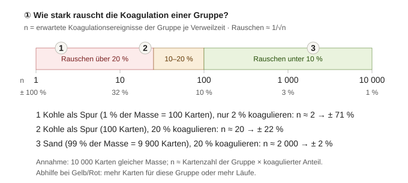
Abbildung: Rauschen der koagulierten Menge einer Gruppe abhängig von der Zahl ihrer Koagulationsereignisse je Verweilzeit; Beispiele mit 10 000 Karten gleicher Masse.
- Woher die Größen kommen: Pg folgt aus dem Kernel (Temperatur, Gasviskosität und freie Weglänge aus T und p, Dichten, Partikelgrößen), aus der Konzentration im Apparat (Massenstrom, Dichte, Größenverteilung, Volumen) und aus der Verweilzeit; Ng aus der Kartenverteilung. Eine Schätzung vor der Rechnung ist also möglich. Einfacher und zuverlässiger ist es, während der Rechnung die Ereignisse je Apparat und Gruppe zu zählen und nach der Simulation eine Warnung auszugeben, z. B. „Koagulator 1, Kohle: 18 Koagulationsereignisse je Verweilzeit, Rauschen etwa ±24 %“ – wie die heutigen Hinweise zu Stoffen. Die Mehrfachläufe (Kapitel 10) bestätigen das tatsächliche Rauschen.
- Abhilfe: mehr Karten für die Gruppe (Mindestzahl, „shift action“ nach Zhao et al. 2009), oder mehr Läufe. Teilkoagulation für alle Paare ist nicht nötig.
- Wählbare Koagulationsregel: Die Ereignisregel wird als austauschbarer Baustein gebaut (wie die Transportmodelle): Standard Totalkoagulation (k = 1); Optionen Teilkoagulation mit festem Anteil (mit Merging) und SWA1, beide nur zum Vergleich. Alle teilen Paarauswahl, Zeitschritte und Kernel; sie unterscheiden sich nur in Rate und Ereignis. Nutzen: Die Wahl lässt sich in der Dissertation durch direkten Vergleich an Fällen mit analytischer Lösung (13.6) belegen.
13.16 Kurzfassung: MC-Partikel und Koagulation – Entscheidungen und Begründungen (Stand 15. Oktober 2026)
| Frage | Entscheidung | Begründung in einem Satz | Details |
|---|
| Warum MC-Partikel? | Für Agglomerate aus mehreren Stoffen (und später Porosität, fraktale Dimension) | Ein Raster braucht für jede weitere Eigenschaft eine Achse (100k Zellen), Karten nur eine Zahl mehr. | 13.8, Abb. Setzkasten/Karteikarte, Raster/Punktwolke |
| Wo leben die Partikel? | Darstellung je Simulation wählbar: Kontinuum oder Partikel ab dem Inlet | Einmal Partikel heißt überall Partikel; eine Mischform müsste jede Unit doppelt können. | 13.7, 13.8 |
| Wie entstehen die Partikel am Inlet? | Platzierung an Quantilen der Verteilung | Rauschfrei, alle Bereiche der Verteilung sicher abgedeckt. | 13.8, Abb. Quantile |
| Welche Koagulationsregel? | Totalkoagulation (ganzes leichteres Paket, sF = Wmin) | Konstante Kartenzahl, Masse je Stoff bei jedem Ereignis exakt, keine erfundenen Zusammensetzungen, gemessen weniger Rauschen (SWA brauchte rund 20-mal mehr Rechenzeit). | 13.9, 13.13, 13.14, Abb. Schalter/Dimmer, Total/SWA, Lupe |
| Wie viel koaguliert? | Aus Kernel und Konzentration; Zufall nur im Zeitpunkt und in der Paarwahl | Ein frei gewählter Anteil je Schritt hängt vom Zeitschritt ab und hat keine Physik. | 13.9, 13.11 |
| Zufälliger Koagulationsgrad? | Nein | Die echte Stoßstreuung (√ΔN) ist bei Pulvern winzig und vom MC-Rauschen überdeckt. | 13.10 |
| Teilkoagulation? | Nicht als Standard | Die scheinbar feinere Auflösung muss später mit Rauschen (Entfernen) oder Mittelung (Merging) bezahlt werden. | 13.13 |
| Kritische Fälle? | Ereignisse je Gruppe zählen, Warnung bei n < 100; Abhilfe gezielt für die Gruppe | Rauschen ≈ 1/√n; mehr Karten nur dort, wo es nötig ist. | 13.15, Abb. Ampel |
| Logik wählbar? | Ja, Ereignisregel austauschbar; Standard Totalkoagulation | Erlaubt den Vergleich, mit dem sich die Wahl begründen lässt. | 13.15 |
| Stochastische Auflösung? | Nur als Herleitung der Rate β·wmax/V, keine eigene Stellschraube | Eine feinere Auflösung wirkt wie mehr Karten, erzeugt aber ständig neue Karten; die einfache Beschreibung „ganzes leichteres Paket“ genügt. | 13.14 |
| Welche Formeln und Parameter? | Kette von T, p, Stoffwerten, Zulauf und Apparat bis zum Rauschen | Zeigt, was gemessen, vorgegeben oder berechnet wird. | 13.17, Abb. Eingaben → Rauschen |
| Splitter im Partikelmodus? | Entschieden: Karten systematisch verteilen (Konto-Verfahren) – als Umsetzung des (OU-)Anteils, nicht als Ersatz dafür | Kartenzahl bleibt konstant, kaum Rauschen, Eigenschaften exakt, kein Merging durch Splitter. | 13.18, Abb. Splitter |
| Offen | Gewichtung (gleiche Masse oder gleiche Anzahl je Karte), Begrenzung der Kartenzahl im Flowsheet (Merging mit Toleranz bei Zuläufen). |
13.17 Formelkarte: von Druck und Temperatur zum Rauschen (Diskussion 15. Oktober 2026)
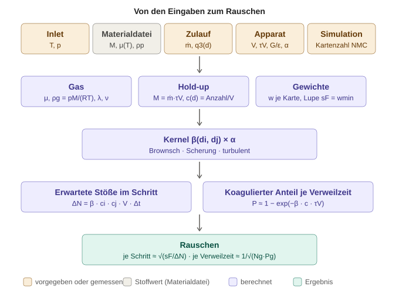
Abbildung: Welche Eingaben über welche berechneten Größen in den Kernel, die Stoßzahl und das Rauschen eingehen.
Art der Größe: vorgegeben/gemessen Stoffwert berechnet empirisch angepasst Ergebnis. Beispielwerte nur zur Größenordnung: Luft bei 20 °C und 1 atm; 0,1 kg/s Sand mit 100 µm, τV = 10 s, V = 10 L; Scherrate 100 s−1.
| Größe | Formel | Einheit | Art | Beispiel |
|---|
| Gas |
| Temperatur T | am Inlet; im Merger aus der Energiebilanz (14.3) | K | vorgegeben | 293,15 K |
| Druck p | am Inlet; im Merger kleinster Druck | Pa | vorgegeben | 101 325 Pa |
| Molmasse M des Gases | – | kg/mol | Stoffwert | Luft 0,028951 |
| Gasviskosität μ | Sutherland: μ = μref·(Tref + S)/(T + S)·(T/Tref)1,5; N2: μref = 1,663·10−5 Pa·s, Tref = 273 K, S = 107 K; Luft: Messtabelle. Druck praktisch ohne Einfluss (14.6) | Pa·s | berechnet aus T, Parameter Stoffwert | N2 1,757·10−5; Luft 1,82·10−5 |
| Gasdichte ρg | ρg = p·M/(R·T) | kg/m³ | berechnet | 1,204 |
| Kinematische Viskosität ν | ν = μ/ρg | m²/s | berechnet | 1,51·10−5 |
| Freie Weglänge λ | λ = (μ/p)·√(π·R·T/(2·M)) | m | berechnet | 65 nm |
| Knudsen-Zahl, Cunningham-Faktor | Kn = 2λ/d; C = 1 + Kn·(1,257 + 0,4·exp(−1,1/Kn)) | – | berechnet | 100 µm: Kn = 0,0013, C ≈ 1 – wichtig nur für feine Partikel |
| Partikel, Apparat und Hold-up |
| Partikeldichte ρp | – | kg/m³ | Stoffwert | Sand 2200 |
| Massenstrom ṁ(t), Größenverteilung q3(d) | Zeitprofil und Verteilung am Inlet | kg/s; 1/m | vorgegeben/gemessen | 0,1 kg/s; 100 µm |
| Partikelmasse m(d) | m = ρp·π·d³/6 | kg | berechnet | 1,15·10−9 |
| Volumen V, Verweilzeit τV | τV vorgegeben oder τV = V/Q (Q = Volumenstrom des Trägerfluids) | m³; s | vorgegeben bzw. berechnet | 10 L; 10 s |
| Hold-up-Masse M | dM/dt = ṁein − M/τV; stationär M = ṁ·τV | kg | berechnet | 1 kg |
| Anzahlkonzentration c | c(d) = M·q3(d)/(m(d)·V); je Karte ci = wi/V | m−3 | berechnet | 8,7·1010 (Volumenanteil 4,5 %) |
| Kernel |
| Scherrate G, Dissipationsrate ε | G = √(P/(μf·V)) (Camp & Stein 1943); ε = P/(ρ·V); P = Leistungseintrag | 1/s; W/kg | vorgegeben oder berechnet aus P | G = 100 s−1; ε = 1 W/kg |
| Haftwahrscheinlichkeit α | Anteil der Stöße, die zum Ankleben führen; je Stoffpaar | – | empirisch | 0,001 (angenommen) |
| Kernel Brownsch | β = (2·kB·T/(3·μ))·(Ci/di + Cj/dj)·(di + dj) | m³/s | berechnet | 5,9·10−16 (bei 100 µm vernachlässigbar) |
| Kernel Scherung | β = (G/6)·(di + dj)³ | m³/s | berechnet | 1,3·10−10 |
| Kernel turbulent | β = 1,294·√(ε/ν)·(ri + rj)³ (Saffman & Turner 1956) | m³/s | berechnet | 3,3·10−10 (in Luft) |
| Stöße, Karten und Rauschen |
| Erwartete Stöße im Schritt | ΔNij = α·βij·ci·cj·V·Δt (für i = j mit Faktor ½) | – | berechnet | |
| Koagulierter Anteil je Verweilzeit | P ≈ 1 − exp(−α·β·c·τV) | – | berechnet (Schätzung) | α = 1: 116 Stöße je Korn, P ≈ 1; α = 0,001: P ≈ 11 % |
| Kartenzahl NMC | – | – | vorgegeben (Simulation) | 10 000 |
| Gewicht w, Lupe s | w = mKarte/m(d); s = wmin ≈ (echte Partikel im Apparat)/NMC | – | berechnet | ≈ 8,7·104 Körner je Karte |
| Rauschen | je Schritt ≈ √(s/ΔN); je Verweilzeit ≈ 1/√(Ng·Pg) | – | Ergebnis | 10 000 × 11 % ≈ 1 100 Ereignisse → ±3 % |
- Was gemessen werden muss: Stoffwerte (Dichte, Viskositätsparameter, Molmasse – in der Materialdatei), Zulauf (Massenstrom, Größenverteilung, T, p), Apparat (Volumen, Verweilzeit oder Volumenstrom, Leistungseintrag). Die Haftwahrscheinlichkeit α ist meist nicht direkt messbar und wird an Versuche angepasst; sie verändert das Ergebnis am stärksten (im Beispiel von P ≈ 1 auf 11 %).
- Wo T und p eingehen: nur über das Gas (Viskosität, Dichte, freie Weglänge) und damit über den Kernel. Für grobe Pulver (100 µm) bestimmen Scherung oder Turbulenz den Kernel; T und p wirken dann vor allem über die Viskosität. Für Nanopartikel ist der Brownsche Kernel mit Cunningham-Faktor entscheidend, dort zählen T und p direkt.
13.18 Splitter und Siebe im Partikelmodus (Diskussion 15. Oktober 2026)
- Aufgabe: Ein Splitter teilt einen Strom im Verhältnis f : (1 − f), ein Sieb nach der Größe mit der Trennkurve T(d). Im Kontinuum wird jede Zahl der Verteilung mit f bzw. T(d) multipliziert. Im Partikelmodus besteht der Strom aus Karten – wie werden sie auf die Ausgänge verteilt?
- Drei Varianten: (1) Kopieren – jede Karte wird zu zwei Karten mit den Gewichten f·w und (1 − f)·w (bei Kotalczyk „deterministic outflow“). (2) Zulosen – jede Karte geht ganz mit der Wahrscheinlichkeit f nach A, sonst nach B („stochastic outflow“). (3) Systematisch verteilen – die Karten der Größe nach durchgehen und ganz so auf A und B verteilen, dass A möglichst genau den Anteil f bekommt (wie Karten austeilen); zufälliger Startpunkt in jedem Schritt, die Restabweichung wird in den nächsten Schritt übertragen. Das entspricht dem systematischen Resampling bei Partikelfiltern (Kitagawa 1996).
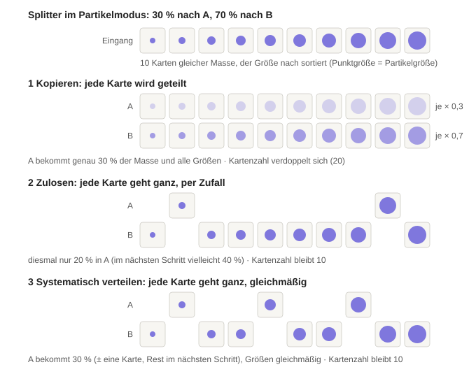
Abbildung: Drei Varianten, zehn Karten auf die Ausgänge A (30 %) und B (70 %) zu verteilen; die Punktgröße zeigt die Partikelgröße, die Blässe beim Kopieren das verkleinerte Gewicht.
| Kopieren | Zulosen | Systematisch verteilen |
|---|
| Masse in A je Schritt | genau f | zufällig; relative Streuung √((1 − f)/(f·N)): N = 1000, f = 0,3 → 4,8 %; N = 200 → 11 % | genau bis auf eine Karte (bei gleicher Masse höchstens 1/(f·N): N = 200 → 1,7 %); der Rest wird im nächsten Schritt ausgeglichen |
| Größenverteilung in A | identisch mit dem Eingang | zufällige Auswahl | gleichmäßige (geschichtete) Auswahl |
| Kartenzahl | 2N nach dem Splitter; wo Zweige wieder zusammenkommen (Merger, Kreislauf), wächst sie → Merging nötig | bleibt N | bleibt N |
| Eigenschaften der Karten | exakt; späteres Merging mittelt | exakt | exakt |
| Beim schwankenden Splitter (OU) | kein zusätzliches Rauschen | MC-Rauschen kann die echte Schwankung überdecken | sehr wenig zusätzliches Rauschen |
| Kreislauf (Rückführung) | Karten vervielfachen sich bei jedem Umlauf, ohne Merging unbegrenzt | unkritisch | unkritisch |
| Dissertation Kotalczyk (Kap. 4.6) | mit Merging das geringste Rauschen; mit Random Removal falsche Ergebnisse | deutlich mehr Rauschen; ebenfalls nur mit Merging korrekt | nicht untersucht (soweit gelesen) |
- Gregors Testfall (Kap. 4.6.2): Flowsheet mit drei Zuläufen (log-normal um 50, 10 und 3 nm), zwei Mischern, einem Sieb mit größenabhängiger Trennfunktion und Rückführungen, verglichen mit der Pivot-Methode (deterministische Klassenmethode). Beide Austragsvarianten liefern nur zusammen mit Merging richtige Verteilungen; der deterministische Austrag mit Merging rauscht am wenigsten.
- Merging-Regel (Dissertation Kotalczyk, Gl. 4.9 und 4.10): Wneu = Wi + Wj; jede additive Eigenschaft (Volumen, Masse je Stoff) pneu = (Wi·pi + Wj·pj)/(Wi + Wj); Merging-Fehler Em = Σk ωk·((pi − pj)/min(pi, pj))², zusammengelegt wird bei Em < εmerge.
- Siebe: Karten weit vom Trennschnitt gehen ganz (T ≈ 0 oder 1). Kopieren betrifft nur Karten im Übergangsbereich (0 < T < 1), die Kartenzahl wächst dort nur wenig. Beim systematischen Verteilen wird je schmalem Größenbereich mit dessen T(d) verteilt.
- Besonderheit StoSiS: Die Quantil-Platzierung am Inlet erzeugt in jedem Schritt Karten mit identischen Größen. Kopien, die später wieder zusammentreffen, ohne dass dazwischen etwas mit ihnen passiert ist, lassen sich deshalb exakt (ohne Mittelung) zusammenlegen.
- OU-Splitter und Kartenverteilung: das Was und das Wie (Diskussion 19. Oktober 2026): Der stochastische Splitter (Kapitel 9) bestimmt mit dem OU-Prozess den Anteil f(t) – das ist das physikalische Modell. Die drei Varianten oben sind dagegen die Umsetzung dieses Anteils mit Karten. Im Kontinuum genügt der OU-Prozess (jede Zahl × f(t)); im Partikelmodus braucht jeder Splitter – fester oder schwankender Anteil – zusätzlich eine Kartenverteilung. Diese soll f(t) nur umsetzen und selbst keine Schwankung hinzufügen.
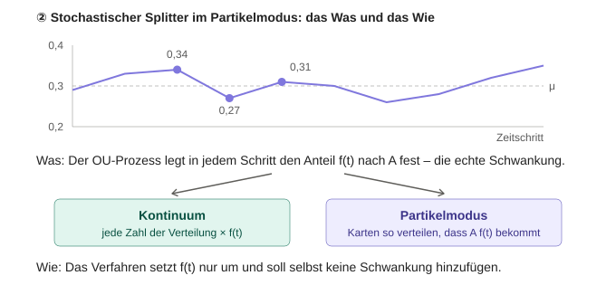
Abbildung: Der OU-Prozess bestimmt den Anteil f(t) (Was), Kontinuum und Partikelmodus setzen ihn unterschiedlich um (Wie).
| Schritt | OU-Anteil f | Ziel (Karten nach A) | systematisch verteilt | zugelost (Beispiel) |
|---|
| 1 | 0,34 | 3,4 | 3 (Rest 0,4) | 2 |
| 2 | 0,27 | 2,7 + 0,4 = 3,1 | 3 (Rest 0,1) | 5 |
| 3 | 0,31 | 3,1 + 0,1 = 3,2 | 3 (Rest 0,2) | 3 |
| Summe | | 9,2 | 9 (0,2 folgen) | 10 |
Beim Zulosen schwankt die Kartenzahl je Schritt um √(N·f·(1 − f)) = 1,4 Karten – mehr als die OU-Schwankung selbst (hier 0,4 Karten). Allgemein addiert Zulosen zur OU-Streuung σ die Streuung √(f·(1 − f)/N): mit σ = 0,05 und f = 0,3 wächst die gemessene Streuung bei N = 1000 Karten um 4 %, bei 200 um 19 %, bei 50 um 64 % – das Verfahren würde das Modell verfälschen. Systematisches Verteilen weicht höchstens um 1/N ab und gleicht das im nächsten Schritt aus.
- Gleicher Zufall in beiden Darstellungen: Der Startpunkt der systematischen Verteilung bekommt einen eigenen Zufallsstrom (Kapitel 8). Dann bleibt der OU-Verlauf bei gleichem Seed in Kontinuum und Partikelmodus identisch, und beide Rechnungen lassen sich Lauf für Lauf vergleichen.
- Entschieden (19. Oktober 2026): Variante 3 – systematisch verteilen mit dem Konto-Verfahren – als Umsetzung für alle Splitter im Partikelmodus (fester und schwankender Anteil).
- Konkreter Ablauf – Konto-Verfahren (Diskussion 19. Oktober 2026):
- Am Splitter kommen in jedem Zeitschritt die Karten des Stroms an, nicht die echten Partikel. Beispiel: 1 000 000 echte Partikel in 10 s sind bei Δt = 0,1 s und 200 Karten je Schritt 20 000 Karten mit je 50 Partikeln.
- Die Karten des Schritts werden der Größe nach sortiert (bei gleicher Größe nach Zusammensetzung).
- Eine zufällige Startposition in der sortierten Liste wird gewählt; die Liste wird von dort einmal ringsum durchgegangen.
- Für jede Karte k wird f(t)·mk auf ein A-Konto eingezahlt. Ist das Konto danach mindestens mk/2, geht die Karte ganz nach A und das Konto wird um mk belastet; sonst geht sie nach B. Bei Karten gleicher Masse: +f je Karte, Grenze 0,5, Belastung 1.
- Der Kontostand wird in den nächsten Schritt übernommen; f(t) darf sich von Schritt zu Schritt ändern (OU-Prozess).
Eigenschaften: Das Konto bleibt zwischen −½ und +½ Karte; die Masse in A weicht deshalb in jedem Schritt und über die ganze Simulation höchstens um eine halbe Karte vom Soll ab. A bekommt etwa jede (1/f)-te Karte, gleichmäßig über alle Größen. Zufall steckt nur im Anfangswert des Kontos (einmal) und in der Startposition (je Schritt), beides aus einem eigenen Zufallsstrom.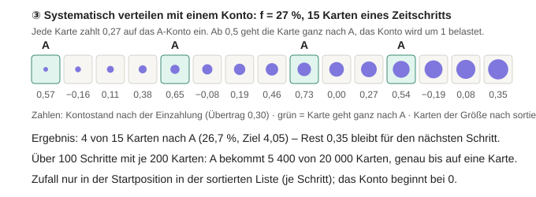
Abbildung: Konto-Verfahren mit f = 27 % für 15 Karten eines Zeitschritts – vier Karten gehen nach A, der Rest von 0,35 wird in den nächsten Schritt übernommen.
- Mehrere Ausgänge: je Ausgang i ein Konto; jede Karte zahlt fi·mk auf jedes Konto ein und geht in den Ausgang mit dem höchsten Kontostand, dessen Konto um mk belastet wird (Prinzip des größten Rests).
- Variante „genaue Anzahl, zufällige Auswahl“ (Idee aus der Diskussion: von 100 Karten 27 auslosen): Die Masse stimmt genauso, aber welche Größen nach A gehen, ist Zufall – nach A können zufällig mehr kleine oder mehr große Partikel gelangen. Das Konto-Verfahren verteilt gleichmäßiger und braucht keine Gruppen.
- Begründung und Optionen (entschieden 19. Oktober 2026):
(3) Systematisch verteilen als Standard – konstante Kartenzahl wie bei der Totalkoagulation, kaum Rauschen, Eigenschaften exakt, kein Merging durch Splitter. (1) Kopieren mit Merging als Option (Gregors Weg, zum Vergleich), (2) Zulosen nur als einfache Referenz. Prüfung an einem Kreislauf mit bekannter stationärer Lösung (6.3) und durch Vergleich mit dem Kontinuum.
13.19 Gewichtung der Karten und Begrenzung der Kartenzahl (Diskussion 20. Oktober 2026)
- Frage A – wie schwer ist eine Karte? Beispiel Log-Normal d50 = 100 µm, σln = 0,4, 200 Karten je Schritt: Feingut unter 50 µm ist 4,2 % der Masse, aber 30 % der Partikel; Grobgut über 200 µm ist 4,2 % der Masse, aber 0,17 % der Partikel. Gleiche Masse je Karte: je 8 Karten für Fein- und Grobgut. Gleiche Anzahl je Karte: 59 Karten Feingut, 0,3 Karten Grobgut.
- Vorteile einheitlicher Regeln: Gleiche Masse – Massenbilanz und Massenverteilung (was Dyssol und die Heatmap zeigen) rauschen überall gleich, das Inlet erzeugt sie direkt über die Quantile von Q3. Gleiche Anzahl – klassisches Verfahren für Koagulation (Stoßhäufigkeit hängt an der Anzahl), einfache Statistik. Beide Regeln gelten aber nur beim Erzeugen: Schon das erste Koagulationsereignis (Totalkoagulation, 13.13) macht Masse und Gewicht der Karten ungleich. Die eigentliche Frage ist deshalb, wie Karten entstehen (Inlet, später Keimbildung, Bruch) und worauf Teilen und Zusammenlegen sie später wieder ausrichten – Frage A und B hängen zusammen.
- Wo eine einheitliche Regel scheitert: Keimbildung. 1012 Silberkeime mit 2 nm wiegen 4·10−11 kg; neben 1 kg Sand bekämen sie bei gleicher Masse keine einzige Karte, obwohl sie die Koagulation bestimmen. Umgekehrt verliert gleiche Anzahl die groben Agglomerate, die die Masse tragen.
- Mittlere Lösung (Vorschlag): Erzeugen nach Masse (Quantile), aber mit einer Mindestzahl an Karten je Größenbereich (z. B. Bereiche mit Faktor 2 im Durchmesser, also etwa 3 je Dekade); innerhalb eines Bereichs gleiche Masse je Karte, das Gewicht folgt aus Masse und Partikelgröße. Im Lauf der Simulation hält Teilen (zu wenige Karten) und Zusammenlegen (zu viele) jeden Bereich zwischen einer Unter- und Obergrenze – wie die „shift action“ bei Zhao, Kruis & Zheng (2009) mit 100 bis 600 Karten je Größenintervall. Offen: Breite der Bereiche, Unter- und Obergrenze.
- Entschieden im Grundsatz (20. Oktober 2026): Mittelweg mit Mindest- und Höchstzahl an Karten je Größenbereich. Ablauf: (1) Bereiche festlegen (Vorschlag Faktor 2 im Durchmesser); (2) beim Erzeugen bekommt jeder Bereich mit Material (mindestens 0,1 % der Masse oder der Anzahl) zuerst die Mindestzahl, die übrigen Karten werden nach Masse verteilt; innerhalb eines Bereichs tragen alle Karten dieselbe Masse (Quantile), das Gewicht folgt aus Masse und Partikelgröße; (3) im Lauf wird geteilt, wenn ein Bereich unter die Untergrenze fällt (1 Karte mit Gewicht 1000 → 2 Karten mit je 500, gleiche Größe und Zusammensetzung), und zusammengelegt, wenn er über die Obergrenze steigt (Gewichte addiert, Größe massengewichtet gemittelt, nur gleiche Stoffkombination). Beispiel mit 200 Karten, Mindestzahl 10: 10 / 16 / 79 / 79 / 16 Karten für 12,5–25 / 25–50 / 50–100 / 100–200 / 200–400 µm statt 0,1 / 8 / 92 / 92 / 8 (gleiche Masse) oder 2 / 57 / 118 / 23 / 0,3 (gleiche Anzahl). Zahlenwerte der Grenzen noch offen.
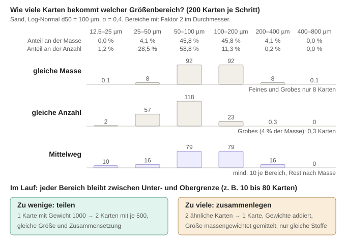
Abbildung: Kartenzahl je Größenbereich für gleiche Masse, gleiche Anzahl und den Mittelweg mit Mindestzahl (Log-Normal d50 = 100 µm, σln = 0,4, 200 Karten je Schritt); darunter Teilen und Zusammenlegen im Lauf.
- Frage B – wo sammeln sich Karten? Ansatz aus der Diskussion: zuerst die Orte finden, an denen sich Karten stauen können; Units mit Hold-up sind Kandidaten, weil Zu- und Ablauf zeitweise verschieden sind.
- Einschätzung:
- In einer Unit mit Hold-up liegen im Mittel Kartenrate × Verweilzeit Karten (Little'sches Gesetz): 2000 Karten/s (200 je Schritt bei Δt = 0,1 s) und τ = 10 s ergeben 20 000 Karten. Schwankt der Zulauf, schwankt die Zahl im selben Verhältnis mit – zeitweise doppelter Zulauf heißt zeitweise doppelt so viele Karten, aber kein Wachsen ohne Ende.
- Rückführungen vervielfachen: Bei Rückführanteil R durchläuft eine Karte im Mittel 1/(1 − R) mal den Kreis – R = 0,3: 1,4-fach, R = 0,9: 10-fach, R = 0,99: 100-fach.
- Quellen erzeugen dauerhaft neue Karten: Inlets, später Bruch (Bruchstücke) und Keimbildung. Totalkoagulation lässt die Kartenzahl gleich. Merger addieren nur die Raten.
- Auch das Gegenteil ist ein Problem: Ein Splitterausgang mit 1 % bekommt nur 2 Karten je Schritt – dort rauscht es stark, dort muss geteilt werden.
- Vorschlag zur Begrenzung: an zwei Stellen regeln, unabhängig von der Form des Flowsheets: (1) in Units mit Hold-up beim Zulauf – neue Karten mit ähnlichen Karten im Inhalt zusammenlegen, solange ein Budget überschritten ist (Kotalczyk, Kap. 4.6: deterministischer Ablauf und Merging rauschen am wenigsten); (2) je Stromscheibe nach Mergern und Splittern – Grenzen je Größenbereich aus Frage A. Zusammengelegt wird nur bei gleicher Stoffkombination und innerhalb einer Toleranz. Noch zu entscheiden.
14 Materialien
Schritte 1–3 umgesetzt (12. Oktober 2026, siehe 14.4); offen ist Schritt 4 (Bearbeiten in der Oberfläche).
14.1 Materialdatenbank von Dyssol
- Datei
Materials.dmdb: reiner Text, also direkt einlesbar. Der Quellcode zum Format liegt im Dyssol-SDK (ModelsCreatorSDK/MaterialsDatabase).
- 18 Stoffe: Air, Al2O3, CaCO3, CaO, Cellets, Coal, CO2, FCC, H2O, H2O_gas, Lactose, Milk, N2, NaCl, O2, Sand, SO2, Urea.
- Konstante Eigenschaften (z. B. Molmasse, kritische Temperatur und kritischer Druck, Schmelz- und Siedepunkt, Bond-Arbeitsindex) und temperatur-/druckabhängige Eigenschaften (z. B. Dichte, Wärmekapazität, Viskosität, Wärmeleitfähigkeit, Dampfdruck). Letztere sind als Korrelationen y(T, p) mit Gültigkeitsbereich hinterlegt: konstant, linear, Polynome, Wertetabelle über T, Sutherland, ideales Gas u. a.
- Datenqualität prüfen: Übernommene Werte als „Quelle: Dyssol-Datenbank“ kennzeichnen und vor der Verwendung in der Dissertation prüfen. Für StoSiS am wichtigsten sind Dichte (Masse ↔ Anzahl) und Wärmekapazität bzw. Enthalpie (Mischtemperatur):
| Stoff | Dichte [kg/m³] | cp [J/(kg·K)] | Enthalpie h(T) | Auffälligkeiten |
|---|
| Air (Gas) | ideales Gas | 1006 | linear | |
| CO2, N2, O2, SO2 (Gase) | Tabelle über T | N2: 1041; CO2, O2, SO2 aus h abgeleitet | ja | CO2: abgeleitetes cp 947 statt etwa 843 J/(kg·K) (+12 %) |
| H2O | Tabelle über T | 4185 | linear | Aggregatzustand nicht angegeben |
| H2O_gas (Gas) | Tabelle über T | 1906 | ja | Viskosität 9,6·10⁻⁸ Pa·s – Wasserdampf hat etwa 10⁻⁵ Pa·s |
| Sand | 2200 | 830 | Polynom | Viskosität 1 Pa·s (für Feststoff ohne Bedeutung) |
| CaCO3 | 2711 | 1436 (aus h) | Tabelle | Literatur etwa 834 J/(kg·K) (+72 %) |
| CaO | 3340 | 818 (aus h) | Tabelle | Literatur etwa 750 J/(kg·K) (+9 %) |
| NaCl | 2170 | – | nur Gasphase, 2500–6000 K | cp des Feststoffs fehlt (Literatur etwa 864 J/(kg·K)) |
| Coal | 1400 | – | konstant (46 105 J/kg) | Enthalpie hängt nicht von T ab, das hieße cp = 0 → Mischtemperatur nicht berechenbar; cp aus der Literatur ergänzen (trockene Kohle etwa 1,0–1,3 kJ/(kg·K), z. B. Merrick 1983 – prüfen) |
| Urea | 1320 | 1544,7 | – | |
| Lactose | 1525 | 1220 | – | |
| FCC | 1632,5 | 1014 | unbrauchbar¹ | poröser Katalysator: Partikel- statt Feststoffdichte? |
| Al2O3 | 1045 | 900 (aus h) | linear | kompaktes Al2O3 hat etwa 3950 → vermutlich Partikeldichte poröser Teilchen; cp-Literatur etwa 775 J/(kg·K) (+16 %) |
| Cellets | 1114 | – | unbrauchbar¹ | keine Molmasse, keine Wärmekapazität |
| Milk | 751 | 2000 | unbrauchbar¹ | vermutlich Milchpulver: 751 liegt nahe der gerüttelten Schüttdichte von Magermilchpulver (≈ 737 kg/m³), ist also eine Schüttdichte (mit Luft zwischen den Partikeln). Feststoffdichte von Milchpulver etwa 1300 (Vollmilch) bis 1460 kg/m³ (Magermilch) – eigene Recherche, noch zu prüfen |
¹ Die Parameter sind die NIST-Shomate-Koeffizienten von flüssigem Wasser, ohne Umrechnung T/1000 und mol → kg; dh/dT wäre etwa 6,5·10¹⁰ J/(kg·K). „aus h“: cp = dh/dT bei 298,15 K aus der Dyssol-Enthalpie abgeleitet.
- Welche Dichte? Es gibt drei: Feststoffdichte (nur das Material, ohne jede Luft), Partikeldichte (einschließlich der Poren im Partikel) und Schüttdichte (einschließlich der Luft zwischen den Partikeln). Die Dyssol-Datenbank mischt diese ohne Kennzeichnung (Milk: Schüttdichte, Al2O3: vermutlich Partikeldichte). Entschieden (12. Oktober 2026): Zunächst gelten alle Partikel als unporös; „Dichte“ in der Materialdatei ist die Feststoffdichte ρs. Porosität ist keine Stoff-, sondern eine Partikeleigenschaft und kommt später an den Inlet: Partikeldichte = (1 − ε)·ρs.
- Enthalpie und Wärmekapazität: Die (spezifische) Enthalpie h(T) ist der Wärmeinhalt von 1 kg gegenüber einem Bezugszustand. Die Wärmekapazität ist ihre Steigung: cp = dh/dT, also wie viel Energie 1 kg je Kelvin Erwärmung aufnimmt. Für die Mischtemperatur zählen nur Differenzen von h; ein konstanter Anteil kürzt sich heraus. Die Bildungsenthalpie (Energie bei der Entstehung aus den Elementen) braucht man nur, wenn Stoffe ineinander umgewandelt werden (Verbrennung, Pyrolyse, Vergasung) – in StoSiS bisher nicht.
- Plausibilitätsprüfung an Sand: Die Steigung des Dyssol-Enthalpiepolynoms bei 298 K beträgt 789 J/(kg·K), der eingetragene konstante Wert cp = 830 J/(kg·K) – 5 % Unterschied. Dyssol speichert h und cp also unabhängig voneinander, und sie passen nicht exakt zusammen. Entschieden (12. Oktober 2026): In der StoSiS-Datei nur cp(T) speichern und h(T) = ∫ cp dT daraus berechnen; bei Stoffen, für die Dyssol nur h(T) hat, beim Übernehmen cp = dh/dT bilden. Dann gibt es eine einzige Quelle, und beide Größen sind immer konsistent.
14.2 Konzept für StoSiS
- Katalog und aktive Stoffe trennen: Der Katalog ist immer geladen und sichtbar. In Dyssol wählt man vorher die Stoffe eines Flowsheets aus, weil jeder Strom zu jedem Zeitpunkt und in jeder Größenklasse einen Anteil je Stoff speichert; jeder zusätzliche Stoff vervielfacht Speicher und Rechenaufwand. Vorschlag: kein eigener Auswahlschritt, der Stoff wird direkt am Inlet aus dem Katalog gewählt, und die aktiven Stoffe des Flowsheets ergeben sich automatisch daraus.
- Vorteil MC-Partikel: Jedes Rechenpartikel trägt seine eigene Zusammensetzung. Ein Agglomerat aus Kohle und Sand hat einfach zwei Massenanteile. In der Klassenmethode braucht man dafür eine zusätzliche Dimension je Stoff (Dyssol: mehrdimensionale Verteilungen und Transformationsmatrizen).
- Einheiten: intern SI wie Dyssol (m, kg, s, K, Pa), weil die Korrelationen und .dflw-Dateien SI verwenden; Anzeige der Partikelgröße in µm.
- Entschieden (12. Oktober 2026): eigene Materialdatei statt der Dyssol-Datei, Startinhalt aus Dyssol kopiert, jeder Wert mit Quelle und Prüfstatus (14.4). Warum: Jeder Stoffwert soll einzeln kontrolliert und mit Quelle belegt werden können; die Dyssol-Datei kennzeichnet weder Quellen noch die Art der Dichte.
- Entschieden (12. Oktober 2026): ein Stoff je Inlet. Mischungen entstehen über mehrere Inlets und Merger. Warum: So lässt sich der zeitliche Verlauf des Mischungsverhältnisses über die Zulaufprofile der einzelnen Inlets steuern. Folge: Die Ströme selbst müssen trotzdem mehrere Stoffe tragen können (hinter einem Merger, in Agglomeraten).
- Entschieden: Temperatur und Druck werden gleich mit eingebaut (14.3).
14.3 Temperatur und Druck im Flowsheet
- Keine globalen Werte: Temperatur T und Druck p sind Eigenschaften jedes einzelnen Stroms (in StoSiS: je Makroschritt, wie der Massenstrom) und jedes Hold-ups – genau wie in Dyssol. Es gibt keine „Umgebungstemperatur“, auf die der Rest des Flowsheets gesetzt wird.
- Am Inlet eingestellt, dann wandern T und p mit dem Material durch das Flowsheet. Entschieden (12. Oktober 2026): Eingabe in Kelvin und Pascal, darunter zur Orientierung °C und bar; Startwerte Raumbedingungen 293,15 K (20 °C) und 101 325 Pa (1,013 bar). (Dyssols Standardbedingungen wären 298,15 K.)
- Jede Unit legt fest, was sie mit T und p macht. Einfache Units (Splitter, Verzögerung, Sieb) reichen T und p unverändert weiter; in Dyssol kopiert z. B. der Splitter den Eingangsstrom samt T und p in beide Ausgänge. Nur Units, die es physikalisch modellieren, ändern T oder p (Wärmeübertrager, Druckverlust, Trockner …). Hold-ups haben eine eigene Anfangstemperatur und einen eigenen Anfangsdruck (Anfangsfüllung).
- Treffen Ströme aufeinander (Merger, Zulauf in einen Hold-up), gilt die Energiebilanz: Die Mischtemperatur ist die, bei der die Enthalpie der Mischung gleich der Summe der Einzelenthalpien ist. Bei konstanter Wärmekapazität cp:
TMisch = Σ ṁi·cp,i·Ti / Σ ṁi·cp,i
- Beispiel gleicher Stoff: 10 kg/s Sand bei 20 °C + 5 kg/s Sand bei 80 °C → (10·20 + 5·80)/15 = 40 °C. Verschiedene Stoffe: 10 kg/s Sand (cp = 830 J/(kg·K)) bei 20 °C + 5 kg/s Harnstoff (cp = 1545 J/(kg·K)) bei 80 °C → ≈ 49 °C, weil der Harnstoff mehr Wärme je Kelvin mitbringt. Bei temperaturabhängigem cp wird die Gleichung HMisch(T) = Σ ṁi·hi(Ti) nach T aufgelöst (Dyssol: Enthalpie-Tabellen).
- Druck nach dem Mischen: Dyssol nimmt den kleinsten Eingangsdruck. Begründung: An der Zusammenführung (T-Stück) herrscht nur ein Druck, und Material strömt nur vom höheren zum niedrigeren Druck. Beispiel: Strom 1 kommt mit 2 bar, Strom 2 mit 1 bar. Läge die Zusammenführung bei 1,5 bar, würde Strom 2 zurückgedrückt. Damit beide vorwärts fließen, darf der Druck dort höchstens 1 bar sein; Strom 1 verliert seinen Überdruck an einer Drossel oder in der Leitung. Höher käme der Druck nur mit Pumpe oder Verdichter – das wäre eine eigene Unit. Ohne Leitungsmodell (Widerstände, Pumpen) ist „kleinster Eingangsdruck“ eine physikalisch begründete Konvention, keine Berechnung; ein massengewichteter Mittelwert wäre dagegen falsch, weil er den Niederdruckstrom ohne Energiezufuhr verdichten würde. Vorschlag: übernehmen, dabei Eingänge ohne Massenstrom nicht mitzählen.
- Wofür T und p gebraucht werden: Stoffwerte sind Funktionen y(T, p) (14.1). Für die meisten Feststoffe ist die Dichte in der Datenbank konstant, T und p ändern dort also wenig. Wichtig werden sie mit Trägergas (Gasdichte nach idealem Gas, Viskosität nach Sutherland), mit physikalischen Kernels (Brownsche Koagulation hängt von T und der Gasviskosität ab) und mit Wachstum/Keimbildung (Dampfdruck).
14.4 Umsetzungsplan (Stand 12. Oktober 2026)
Entscheidung: zuerst eine eigene Materialdatei, die sich Wert für Wert prüfen lässt; Startinhalt aus Dyssol kopiert (BSD-3-Lizenz erlaubt Weitergabe und Änderung mit Lizenzhinweis). Reihenfolge:
| Schritt | Inhalt | Prüfung |
|---|
| 1 Materialdatei | Eigene, von Hand lesbare Datei im Repository im JSON-Format (entschieden 12. Oktober 2026; Gründe siehe unten). Je Wert: Zahl, Einheit, Art (Konstante, Formel mit Parametern oder Messpunkt-Tabelle), Gültigkeitsbereich, Quelle und Prüfstatus („aus Dyssol, ungeprüft“ → „geprüft, Quelle …“). Dichte = Feststoffdichte; Wärme über cp(T). Dyssols Stoff-Schlüssel bleiben erhalten, weil .dflw-Flowsheets die Stoffe darüber ansprechen. | alle 18 Stoffe übernommen; Stichproben gegen die Dyssol-Datei |
| 2 Lesen und Anzeigen (früher A) | Kern (ohne Qt) liest die Datei und wertet jede Eigenschaft bei T und p aus; Warnung außerhalb des Gültigkeitsbereichs. Reiter „Materialien“ im Einstellungsfenster zum Ansehen: Stoffliste, Eigenschaften mit Einheit, Quelle, Prüfstatus und Wert bei wählbarem T und p. | Luftdichte bei 293,15 K und 101 325 Pa = M·p/(R·T) ≈ 1,204 kg/m³; Interpolation in Tabellen |
| 3 Ströme (früher B) | Strom je Makroschritt = Massenstromdichte je Stoff und Größenklasse + T + p; aktive Stoffe automatisch aus den Inlets. Inlet: Stoff, T [K], p [Pa] (darunter °C/bar), Start 293,15 K und 101 325 Pa. Splitter: gleicher Anteil für alle Stoffe, T/p durchreichen. Merger: Summe je Stoff, T aus Energiebilanz, p = kleinster Eingangsdruck mit Massenstrom. Verzögerung: T und p wandern mit dem Material. Ergebnisse: Gesamtmenge wie bisher, zusätzlich je Stoff sowie T(t), p(t); Heatmap/Kurven mit Auswahl „Stoff“, Kurven zusätzlich T und p. | Flowsheet mit einem Stoff bitgleich wie vorher; Massenbilanz je Stoff exakt; Mischbeispiele 40 °C und ≈ 48,9 °C |
| 4 Bearbeiten (früher C) | Werte in der Oberfläche ändern, Stoffe anlegen, Prüfstatus setzen; Export ins Dyssol-Format (.dmdb), damit Dyssol die geprüften Daten ebenfalls nutzen kann. Bis dahin lässt sich die Datei mit einem Texteditor bearbeiten. | Speichern → Laden ergibt dieselben Werte; Export in Dyssol öffnen |
- Ergebnis Schritt 1 (12. Oktober 2026):
data/Materialien.json mit allen 18 Stoffen, Anleitung in data/README.md, Lizenzhinweis data/LICENSE_Dyssol.txt. Erzeugt mit tools/dmdb_to_json.pl; das Skript liest die erzeugte Datei wieder ein und vergleicht: 105 Konstanten, 93 Korrelationen, insgesamt 2000 Zahlen identisch mit der Dyssol-Datei. cp = dh/dT abgeleitet für CaCO3, CaO, CO2, O2, SO2 und Al2O3; keine Wärmekapazität für Coal, NaCl und Cellets. 24 Warnungen markieren die Stellen, die zuerst zu prüfen sind (Tabelle in 14.1). Alle Werte stehen auf „unchecked“, bis sie einzeln geprüft sind.
- Ergebnis Schritt 2 (12. Oktober 2026): Der Rechenkern liest die Datei (
core/include/Materials.h, core/src/MaterialDatabase.cpp; JSON-Bibliothek nlohmann/json 3.12.0, MIT-Lizenz, aus dem Dyssol-SDK kopiert nach core/third_party). Auswertung wie in Dyssol: Gibt es mehrere Einträge, gilt zuerst einer mit T und p im Bereich, dann einer mit T im Bereich, sonst der mit der nächstgelegenen T-Grenze; außerhalb des Bereichs gilt der Randwert. Zusätzlich markiert StoSiS solche Werte, auch wenn T zwar im Gültigkeitsbereich, aber jenseits der Messpunkte liegt (Beispiel Wasserdichte: Bereich bis 1973 K, Punkte nur bis 372,76 K). Gaskonstante R = 8,314462618 J/(mol·K) (CODATA 2018; Dyssol: 8,314459848, Unterschied 3·10−7). Fehlerhafte Dateien werden mit Ortsangabe gemeldet (Syntaxfehler mit Zeile und Spalte, sonst Stoff, Eigenschaft und Feld); der vorherige Stand bleibt dann erhalten. Oberfläche: Reiter „Materialien“ (Menü Flowsheet → Materialien anzeigen) mit Stoffauswahl, Auffälligkeiten, Werten bei wählbarem T und p, Konstanten, Details (Formel, Bereich, Quelle, Status) und Fortschrittsanzeige „x von 203 Werten geprüft“. Die Datei wird direkt aus dem Projektordner gelesen; nach Änderungen genügt „Neu laden“, ohne neu zu bauen.
- Prüfung Schritt 2: Konsolentest mit 25 Prüfungen, alle bestanden, u. a.: Luftdichte bei 293,15 K und 101 325 Pa = 1,20353 kg/m³ (ideales Gas); N2-Viskosität bei 373,15 K = 2,103·10−5 Pa·s (Sutherland); Wasserdampfdruck bei 350 K = 41,78 kPa (Antoine; Tabellenwert etwa 41,7 kPa); bei 373,15 K liegt T zwischen den beiden Dyssol-Bereichen (bis 373 K, ab 379 K) → nächster Eintrag, 99,2 kPa, markiert; CO2-Dichte linear zwischen zwei Messpunkten interpoliert; abgeleitetes CO2-cp = 947 J/(kg·K) wie im Umwandler; fehlendes Komma, fehlendes Feld, unbekannter Typ und fehlende Datei werden verständlich gemeldet.
- Ergebnis Schritt 3 (12. Oktober 2026): Ein Strom (
CStreamSlice) trägt je Makroschritt die Massenstromdichte je Stoff und Größenklasse sowie Temperatur und Druck. Die aktiven Stoffe sind die Stoffe aller Inlets, sortiert in der Reihenfolge der Materialdatei – unabhängig davon, in welcher Reihenfolge die Knoten angelegt wurden. Inlet: Stoff, T [K], p [Pa] (darunter °C und bar), Start Sand bei 293,15 K und 101 325 Pa. Splitter: gleicher Anteil für alle Stoffe, T und p unverändert. Merger: Summe je Stoff, T und p aus MixConditions (siehe unten). Verzögerung: Jeder Platz im Ringpuffer merkt sich T und p seines Materials; kommt Material aus mehreren Zeitpunkten gleichzeitig an (verschiedene Größen sind verschieden lang unterwegs), wird es wie im Merger gemischt. Ergebnisse: Gesamtmenge wie bisher, je Stoff (nur wenn es mehr als einen gibt – sonst ist Stoff 1 die Gesamtmenge) sowie T(t) und p(t) je Lauf. Kurvenfenster: Auswahl „Größe“ (Massenstrom, Temperatur, Druck) und „Stoff“; die Achse von T und p zeigt nur den belegten Bereich. Heatmap: Auswahl „Stoff“, sichtbar ab zwei Stoffen. Hinweise der Units (z. B. Stoff ohne Wärmekapazität) erscheinen nach der Simulation in einem Meldungsfenster.
- Mischtemperatur (
MixConditions): Energiebilanz Σc Wc·hc(T) = Σi Σc wic·hc(Ti), mit hc(T) = ∫ cp,c dT ab 298,15 K (Simpson-Regel, 64 Teilintervalle – exakt für konstantes bis kubisches cp). Gelöst mit dem Newton-Verfahren (Ableitung = Σ Wc·cp,c), abgesichert durch Bisektion zwischen kältester und wärmster Eintrittstemperatur. Haben alle Beiträge mit Material dieselbe Temperatur, wird sie unverändert übernommen (keine Rundungsfehler). Fehlt einem beteiligten Stoff die Wärmekapazität (Coal, NaCl, Cellets) oder fehlt die Materialdatei, wird nach Masse gemittelt und ein Hinweis ausgegeben. Druck: kleinster Druck der Beiträge mit Material; ohne Material (z. B. Zulauf gerade null) gelten Mittel der Temperaturen und kleinster Druck aller Beiträge, oder bei der Verzögerung die Werte des Eingangs.
- Speicher: Ergebnisse je Stoff liegen in einer
std::deque, die nie schrumpft. So bleiben Zeiger der Anzeigen (z. B. der Heatmap) gültig, auch wenn sich die Zahl der Stoffe zwischen zwei Simulationen ändert und die Anzeige während der Rechnung neu zeichnet.
- Prüfung Schritt 3: (1) Bitgleichheit: Zwei Flowsheets (Start-Flowsheet; zwei Inlets, Merger, stochastischer 3er-Splitter, Rückführung über eine Verzögerung; je 20 Läufe) mit altem und neuem Kern gerechnet – alle 9,2 MB Ergebnisse (Einzellauf, Mittelwert, Standardabweichung, Kennwerte je Lauf) bitgleich. (2) Konsolentest mit 17 Prüfungen, alle bestanden: Massenbilanz je Stoff (Sand + Coal → Merger → Splitter 30/70 → zwei Outlets) auf 10−15 genau; jedes Inlet liefert nur seinen Stoff; Sand 20 °C + Sand 80 °C (10 : 5 kg/s) → 40,000000 °C; Sand 20 °C + Harnstoff 80 °C → 48,9206 °C = geschlossene Lösung für konstantes cp; 2 bar + 1 bar → 1 bar, Eingang ohne Massenstrom zählt nicht; Coal ohne cp → Hinweis und Massenmittel; ohne Materialdatei rechnet das Flowsheet weiter; Temperatur am Austritt einer Verzögerung (2 s, für alle Größen gleich) = Eintrittstemperatur 2 s früher, Abweichung 0. (3) Oberfläche über Bildschirmfotos geprüft (Inlet-Editor, Kurven für T und p, Heatmap je Stoff).
- Warum JSON? Alternativen für strukturierte Textdaten sind CSV (Tabelle), INI/TOML (einfache Einstellungen), XML (sehr wortreich), YAML (lesbar, aber Einrückung trägt Bedeutung) oder ein eigenes Format wie Dyssols
.dmdb (Zahlencodes: „27 234 2 …“ heißt Dichte, konstant). Binär wäre HDF5 (Dyssols .dflw), im Texteditor aber nicht lesbar. JSON trägt Namen statt Codes, kann verschachteln (Stoff → Eigenschaft → Messpunkte; mit CSV bräuchte man mehrere Tabellen), ist von Python, MATLAB und C++ aus lesbar und wird auch für das Speichern von Flowsheets genutzt. Nachteile: keine Kommentare, strenge Syntax (ein fehlendes Komma → Fehlermeldung mit Zeilennummer).
- Bewusst noch nicht enthalten: Trägergasphase (kommt mit dem Brownschen Kernel) und die Umstellung der Größenachse auf SI-Einheiten (kommt zusammen mit dem logarithmischen Raster, weil beide die Rastereinstellungen betreffen; umgesetzt am 19. Oktober 2026, Kapitel 2.5).
- Darstellung je Stoff: Heatmap und Kurven zeigen heute eine Zeit-Größe-Matrix je Port. Pro Stoff wird künftig eine weitere Matrix gleicher Form gespeichert; die Zeichenroutinen bleiben unverändert, die Fenster bekommen nur eine Auswahl, welche Matrix gezeigt wird. Mehraufwand liegt in der Aufzeichnung und der Statistik je Stoff (Speicher wächst mit der Zahl der aktiven Stoffe, bei 5 Stoffen und 10 Ports einige zehn MB).
14.5 Wie Stoffwerte von Temperatur und Druck abhängen
- Es gibt beides: Formeln (aus der Theorie, Konstanten an Messungen angepasst) und Messpunkt-Tabellen. Jeder Eintrag sagt, welche Art er ist und in welchem T- und p-Bereich er gilt.
- Gasdichte: ideales Gas, ρ = p·M/(R·T) – hängt von T und p ab. Luft bei 293,15 K und 101 325 Pa: 1,204 kg/m³. Feststoffe: Wärmeausdehnung etwa 10−5 je Kelvin, Dichte praktisch konstant. Flüssigkeiten: schwach von T abhängig (Wasser: Tabelle).
- Gasviskosität steigt mit T (bei Flüssigkeiten fällt sie) und hängt bei üblichen Drücken praktisch nicht von p ab – ein Ergebnis der kinetischen Gastheorie; erst bei hohen Drücken oder nahe am kritischen Punkt spielt p eine Rolle. Formel nach Sutherland (1893):
μ(T) = μref · (T/Tref)3/2 · (Tref + S)/(T + S)
- S = Sutherland-Konstante des Gases. Beispiel N2 aus der Dyssol-Datei: μref = 1,663·10−5 Pa·s bei Tref = 273 K, S = 107 K → bei 373 K: 1,663·10−5 · 1,597 · 0,792 ≈ 2,10·10−5 Pa·s. Für Wasserdampf ist Sutherland nur eine Näherung (polares Molekül); Referenz ist die IAPWS-Formulierung (Huber et al. 2009). Größenordnung: etwa 1,2·10−5 Pa·s bei 373 K – der Dyssol-Wert 9,6·10−8 ist etwa 100-fach zu klein. Bei Gasgemischen (Luft + Wasserdampf) hängt die Viskosität zusätzlich von der Zusammensetzung ab.
- Zwischen Messpunkten interpoliert Dyssol linear, außerhalb nimmt es den Randwert (kein Extrapolieren). Für glatte Verläufe wie die Gasviskosität (etwa ∝ T0,7) ist der Fehler linearer Interpolation zwischen Punkten im Abstand von 100 K klein: zwischen 400 und 500 K etwa 0,1 %. Vorschlag: wie Dyssol, aber mit Warnung, sobald außerhalb des Gültigkeitsbereichs gerechnet wird; wo möglich eine Formel an die Messpunkte anpassen.
14.6 Prüfquelle für Gasviskositäten: Lemmon & Jacobsen (2004)
- Inhalt: Referenzgleichungen des NIST für Viskosität und Wärmeleitfähigkeit von Stickstoff, Sauerstoff, Argon und Luft (Luft als Pseudo-Reinstoff), gültig für Gas und Flüssigkeit. Viskosität η = η0(T) + ηr(τ, δ): Verdünntes-Gas-Anteil nach Chapman-Enskog, η0 = 0,0266958·√(M·T)/(σ²·Ω(T*)) in µPa·s mit Lennard-Jones-Parametern σ, ε/k und angepasstem Stoßintegral Ω(T*) = exp(Σ bi·(ln T*)i), T* = T/(ε/k); dazu ein Restanteil, der von der Dichte abhängt (δ = ρ/ρc, τ = Tc/T). Die Gleichungen brauchen Temperatur und Dichte, die Dichte kommt aus einer Zustandsgleichung.
- Unsicherheit laut Paper: Viskosität im verdünnten Gas 0,5 % (N2, Ar) bzw. 1 % (Luft, O2 oberhalb 200 K); allgemein 2 % (N2, Ar) bzw. 5 % (O2, Luft), höher am kritischen Punkt. Wärmeleitfähigkeit im verdünnten Gas 2 %.
- Nachgerechnet (12. Oktober 2026), verdünntes Gas, Viskosität in µPa·s:
| T [K] | N2 Paper | N2 Dyssol (Sutherland) | Abw. | O2 Paper | O2 Dyssol | Abw. | Luft Paper | Luft Dyssol (Tabelle) | Abw. |
|---|
| 273,15 | 16,61 | 16,64 | +0,1 % | 19,12 | 19,20 | +0,4 % | 17,20 | 17,10 | −0,6 % |
| 293,15 | 17,56 | 17,57 | +0,1 % | 20,25 | 20,36 | +0,5 % | 18,19 | 18,20 | ±0,0 % |
| 373,15 | 21,09 | 21,03 | −0,3 % | 24,49 | 24,67 | +0,7 % | 21,88 | 21,70 | −0,8 % |
| 500 | 26,06 | 25,81 | −1,0 % | 30,47 | 30,67 | +0,6 % | 27,08 | – | |
| 800 | 35,88 | 34,95 | −2,6 % | 42,32 | 42,24 | −0,2 % | 37,36 | – | |
| 1200 | 46,76 | 44,56 | −4,7 % | 55,34 | 54,42 | −1,7 % | 48,72 | – | |
- Ergebnis: Bis etwa 500 K liegen die Dyssol-Werte für N2, O2 und Luft innerhalb von 1 % am Paper – im Rahmen der dort angegebenen Unsicherheit. Darüber wächst die Abweichung des Sutherland-Gesetzes für N2 auf 2,6 % (800 K) und 4,7 % (1200 K). Die Luft-Tabelle reicht nur bis 373 K. Der dichteabhängige Restanteil ist bei Normaldruck vernachlässigbar: N2 bei 300 K und 1 atm hat δ = 0,0036, der Restanteil beträgt 0,07 % von η0.
- Nutzen für StoSiS: (a) Belegquelle, um die Viskositäten von N2, O2 und Luft in der Materialdatei als geprüft zu markieren (bis 500 K). (b) Für Aerosol-Kernels bei hohen Temperaturen (z. B. Gasphasensynthese) ließe sich ein eigener Eintragstyp „Chapman-Enskog“ (σ, ε/k, Stoßintegral) ergänzen; er ist physikalisch begründet und extrapoliert besser als Sutherland. Wichtig ist das später für den Brownschen Kernel und den Cunningham-Faktor, die über die mittlere freie Weglänge λ = (μ/p)·√(π·R·T/(2·M)) direkt von der Viskosität abhängen. Für Wasserdampf ist das Gegenstück die IAPWS-Formulierung (Huber et al. 2009), für Gasgemische (Luft + Wasserdampf) braucht es Mischungsregeln (z. B. Wilke).
15 Ausblick und offene Punkte
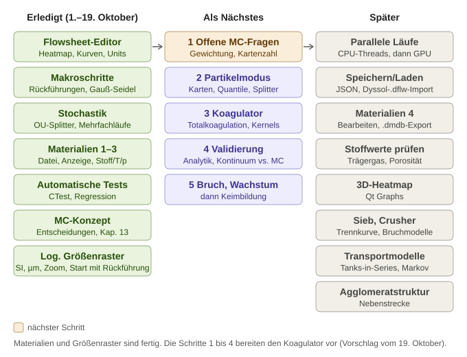
Abbildung: Roadmap (Stand 20. Oktober 2026) – Materialien und logarithmisches Größenraster sind fertig; als Nächstes die offenen MC-Fragen (Gewichtung der Karten, Begrenzung der Kartenzahl), dann Partikelmodus, Koagulator, Validierung, Bruch und Wachstum. Die Fassung vom 19. Oktober liegt als Roadmap_2026-10-19.svg daneben.
- Läufe parallel rechnen (CPU-Threads mit je einer Kopie des Flowsheets, später GPU/amplitUDE); CUDA-Zielarchitektur der H100 (sm_90) ergänzen.
- Gewichtete Monte-Carlo-Partikel als zweite Stromdarstellung (Diskussion in 13.8); Multi-Rate mit ereignisgesteuertem MC.
- Nebenstrecke Agglomeratstruktur: Wie genau Agglomerate aufgebaut sind (welcher Stoff an welchem hängt, Kontaktpunkte auf der Primärpartikeloberfläche, Winkel zwischen drei verbundenen Partikeln). Abstufung der Detailtiefe je Rechenpartikel: (0) nur Masse/Volumen (Kugel); (1) zusätzlich Zahl und Größe der Primärpartikel, mit fraktaler Dimension Df und Vorfaktor kf folgt der Stoßradius aus Rg = a·(np/kf)1/Df; (2) zusätzlich Masse je Stoff; (3) vollständige Struktur mit Lage jedes Primärpartikels. Stufe 3 ist für Millionen Rechenpartikel zu teuer, eignet sich aber als getrennte Detailsimulation, deren Ergebnisse (z. B. Porosität und Df abhängig von np) als Zusammenhänge in Stufe 1–2 einfließen.
- Prozessmodelle: Koagulator mit Koagulation, Bruch, Wachstum, Keimbildung (Planung in Kapitel 13); Crusher.
- Realistische Transportmodelle über Verweilzeitverteilungen (Tanks-in-Series, Dispersion, Markov-Ketten).
- Flowsheets speichern/laden (geplant JSON) und Import von Dyssol-Dateien (.dflw = HDF5).
- Logarithmisches Größenraster mit SI-Einheiten (Anzeige in µm): umgesetzt am 19. Oktober 2026 (2.5, 2.6). Zurückgestellt: Fächer statt Stützstellen, Anzeige je Dekade, Normierung am Rand, Randwächter nach der Simulation (sobald es Koagulation gibt), Anzeige nach Anzahl (q0).
- Materialien: Schritte 1–3 umgesetzt (Kapitel 14.4). Offen sind Schritt 4 (Werte in der Oberfläche bearbeiten, Export ins Dyssol-Format .dmdb), die Prüfung aller Stoffwerte (bisher alle „unchecked“), Trägergas und Porosität.
- 3D-Darstellung der Heatmap (angefragt am 12. Oktober 2026): Umschalter 2D ↔ 3D im Heatmap-Fenster, Fläche über Zeit und Größe, mit der Maus drehbar. Möglichkeiten: Qt-Modul „Qt Graphs“ (3D-Flächendiagramme mit Licht und Drehen; in der installierten Qt-Version noch nicht vorhanden, nachinstallierbar) oder eigenes Zeichnen mit QPainter wie die bisherige Heatmap (Vierecke von hinten nach vorn projiziert, gleiche Farbskala und Modi, keine neue Abhängigkeit). Tendenz (12. Oktober 2026): Qt Graphs, weil weitere 3D-Darstellungen absehbar sind – z. B. MC-Partikel als 3D-Punktwolke im Eigenschaftsraum (Größe × Zusammensetzung × Feuchte). Qt Graphs rechnet auf der Grafikkarte und bringt Achsen, Zoom und Werteanzeige beim Anklicken mit. Nachteile: zusätzliches Modul (Installation über das Qt Maintenance Tool; Voraussetzungen Qt Quick 3D und Shader Tools sind vorhanden), braucht einen funktionierenden Grafiktreiber (Remote-Desktop prüfen), Bilder nur als Pixelgrafik (für Veröffentlichungen besser die Daten exportieren). Vor dem Einbau ein kleiner Probelauf.
Validierungsstrategie (Diskussion 20. Oktober 2026)
- Anlass: Im Arbeitsgruppentreffen wurde die Validierung angesprochen. Ideen: experimentelle Studien zu einzelnen Elementen (Splitter, Merger, Koagulator …) suchen; das Validierungsvorgehen von Dyssol untersuchen; einen großen Vergleich an einem experimentell untersuchten Flowsheet mit Dyssol, PharmaPy und StoSiS.
- Drei Ebenen, die getrennt nachgewiesen werden:
- Verifikation – rechnet das Programm seine Gleichungen richtig? Analytische Lösungen und Erhaltungssätze (bisher: Massenbilanzen, OU-Statistik in Kap. 11, Größenraster in 2.5; später Koagulation mit konstantem, Summen- und Produktkern), Konvergenz mit Raster, Kartenzahl und Zahl der Läufe.
- Code-zu-Code-Vergleich – gleiches Flowsheet in Dyssol und PharmaPy. Zeigt, dass gleiche Modelle gleich umgesetzt sind; beweist aber nichts über die Wirklichkeit.
- Validierung gegen Experimente – beschreibt das Modell (Kernel, Verweilzeitverhalten, Bruchfunktion) die Messung? Geprüft wird das Modell in der Software, nicht die Software allein.
- Einschätzung zu Einzelelementen: Ideale Splitter und Merger sind Definitionen (Massenbilanz) – dafür braucht es keine Experimente, die Tests reichen. Experimentell interessant ist der schwankende Anteil (OU-Splitter): Daten zu Dosier- und Teilungsschwankungen kontinuierlicher Anlagen (z. B. Differentialdosierwaagen in der kontinuierlichen Pharmaproduktion) – zu recherchieren. Sinnvolle Einzel-Experimente gibt es für Koagulation (Aerosol: Größenverteilung über die Zeit in Kammer oder Rohr; eigene Daten der Arbeitsgruppe prüfen), Agglomeration/Granulation (Wirbelschicht), Verweilzeit (Tracer) sowie Mahlen und Sieben.
- Besonderheit dieser Arbeit: StoSiS rechnet Streuung. Zur Validierung gehören deshalb auch Messreihen mit Wiederholungen oder zeitlichem Verlauf, an denen sich die Schwankung prüfen lässt – nicht nur Mittelwerte.
- Anpassen und Vorhersagen trennen: Modellparameter (z. B. Vorfaktor eines Kernels) an einem Datensatz anpassen, an einem anderen prüfen.
- Dyssol: Validierungsvorgehen noch nachzulesen (Skorych et al. 2020; Heinrich 2020; Hilfe der lokalen Installation).
- Dreiervergleich Dyssol – PharmaPy – StoSiS: PharmaPy (Casas-Orozco et al. 2021) ist auf pharmazeutische Prozesse ausgerichtet (u. a. Kristallisation, Filtration, Trocknung, Reaktoren). Ein gemeinsamer Fall braucht Units, die alle drei Programme können. Vorgehen: (1) Unit-Listen von Dyssol und PharmaPy vergleichen und mit der StoSiS-Roadmap abgleichen (heute kann StoSiS Transport, Splitter, Merger; Koagulation, Wachstum, Keimbildung folgen); (2) für die Schnittmenge ein experimentell untersuchtes Flowsheet suchen – Kandidaten: kontinuierliche Kristallisation mit Rückführung (braucht Keimbildung und Wachstum) oder Agglomeration; (3) den Vergleich danach in die Roadmap einplanen.
16 Literatur (vor dem Zitieren prüfen)
- Friedlander, S. K. (2000): Smoke, Dust, and Haze – Fundamentals of Aerosol Dynamics, 2. Aufl. Oxford University Press (Keimbildung, Kelvin-Gleichung).
- Seinfeld, J. H.; Pandis, S. N. (2016): Atmospheric Chemistry and Physics, 3. Aufl. Wiley (Kapitel Keimbildung).
- Casas-Orozco, D.; Laky, D.; Wang, V.; Abdi, M.; Feng, X.; Wood, E.; Laird, C.; Reklaitis, G. V.; Nagy, Z. K. (2021): PharmaPy: An object-oriented tool for the development of hybrid pharmaceutical flowsheets. Computers & Chemical Engineering 153, 107408.
- Uhlenbeck, G. E.; Ornstein, L. S. (1930): On the theory of the Brownian motion. Physical Review 36, 823–841.
- Gillespie, D. T. (1996): Exact numerical simulation of the Ornstein-Uhlenbeck process and its integral. Physical Review E 54, 2084–2091.
- Gillespie, D. T. (1977): Exact stochastic simulation of coupled chemical reactions. Journal of Physical Chemistry 81, 2340–2361.
- Welford, B. P. (1962): Note on a method for calculating corrected sums of squares and products. Technometrics 4, 419–420.
- Marsaglia, G.; Bray, T. A. (1964): A convenient method for generating normal variables. SIAM Review 6, 260–264.
- Matsumoto, M.; Nishimura, T. (1998): Mersenne Twister: a 623-dimensionally equidistributed uniform pseudo-random number generator. ACM Transactions on Modeling and Computer Simulation 8, 3–30.
- Steele, G. L.; Lea, D.; Flood, C. H. (2014): Fast splittable pseudorandom number generators. Proceedings OOPSLA 2014 (Ursprung von SplitMix64).
- Kahn, A. B. (1962): Topological sorting of large networks. Communications of the ACM 5, 558–562.
- Hyndman, R. J.; Fan, Y. (1996): Sample quantiles in statistical packages. The American Statistician 50, 361–365.
- Skorych, V.; Dosta, M.; Heinrich, S. (2020): Dyssol – an open-source flowsheet simulation framework for particulate materials. SoftwareX 12, 100572.
- Heinrich, S. (Hrsg.) (2020): Dynamic Flowsheet Simulation of Solids Processes. Springer.
- Levenspiel, O. (1999): Chemical Reaction Engineering, 3. Aufl. Wiley.
- Danckwerts, P. V. (1953): Continuous flow systems: Distribution of residence times. Chemical Engineering Science 2, 1–13.
- Berthiaux, H.; Mizonov, V.; Zhukov, V. (2005): Application of the theory of Markov chains to model different processes in particle technology. Powder Technology 157, 128–137.
- Gillespie, D. T. (2000): The chemical Langevin equation. Journal of Chemical Physics 113, 297–306.
- Gillespie, D. T. (2001): Approximate accelerated stochastic simulation of chemically reacting systems. Journal of Chemical Physics 115, 1716–1733.
- Kahn, H.; Harris, T. E. (1951): Estimation of particle transmission by random sampling. National Bureau of Standards, Applied Mathematics Series 12, 27–30.
- Kitagawa, G. (1996): Monte Carlo filter and smoother for non-Gaussian nonlinear state space models. Journal of Computational and Graphical Statistics 5, 1–25.
- Smith, M.; Matsoukas, T. (1998): Constant-number Monte Carlo simulation of population balances. Chemical Engineering Science 53, 1777–1786.
- Patterson, R. I. A.; Wagner, W.; Kraft, M. (2011): Stochastic weighted particle methods for population balance equations. Journal of Computational Physics 230, 7456–7472.
- Rjasanow, S.; Wagner, W. (1996): A stochastic weighted particle method for the Boltzmann equation. Journal of Computational Physics 124, 243–253.
- Eibeck, A.; Wagner, W. (2001): Stochastic particle approximations for Smoluchowski's coagulation equation. Annals of Applied Probability 11, 1137–1165.
- Patterson, R. I. A.; Kraft, M.: Weighted particle methods for the Smoluchowski coagulation equation. Preprint 47, Cambridge Centre for Computational Chemical Engineering.
- Lee, K. F.; Patterson, R. I. A.; Wagner, W.; Kraft, M. (2015): Stochastic weighted particle methods for population balance equations with coagulation, fragmentation and spatial inhomogeneity. Journal of Computational Physics 303, 1–18.
- Zhao, H.; Kruis, F. E.; Zheng, C. (2010): A differentially weighted Monte Carlo method for two-component coagulation. Journal of Computational Physics 229, 6931–6945.
- Zhao, H.; Kruis, F. E.; Zheng, C. (2011): Monte Carlo simulation for aggregative mixing of nanoparticles in two-component systems. Industrial & Engineering Chemistry Research 50, 10652–10664.
- Liu, S.; Chan, T. L. (2018): Differentially weighted operator splitting Monte Carlo method for multi-component aerosol dynamics. Applied Mathematical Modelling (Band und Seiten nachtragen).
- Kotalczyk, G.; Kruis, F. E. (2018): Fractional Monte Carlo time steps for the simulation of coagulation for parallelized flowsheet simulations. Chemical Engineering Research and Design 136, 71–82.
- Kotalczyk, G.: Parallel Monte Carlo Algorithms for Flowsheet Simulations based on the Population Balance Equation. Dissertation, Universität Duisburg-Essen.
- Liffman, K. (1992): A direct simulation Monte-Carlo method for cluster coagulation. Journal of Computational Physics 100, 116–127.
- Lin, Y.; Lee, K.; Matsoukas, T. (2002): Solution of the population balance equation using constant-number Monte Carlo. Chemical Engineering Science 57, 2241–2252.
- Maisels, A.; Kruis, F. E.; Fissan, H. (2004): Direct simulation Monte Carlo for simultaneous nucleation, coagulation and surface growth in dispersed systems. Chemical Engineering Science 59, 2231–2239.
- Vikhansky, A.; Kraft, M. (2005): Conservative method for the reduction of the number of particles in the Monte Carlo simulation method for kinetic equations. Journal of Computational Physics 203, 371–378.
- Lécot, C.; Wagner, W. (2004): A quasi-Monte Carlo scheme for Smoluchowski's coagulation equation. Mathematics of Computation 73, 1953–1966.
- Lécot, C.; Tarhini, A. (2007): A quasi-stochastic simulation of the general dynamics equation for aerosols. Monte Carlo Methods and Applications 13, 369–388 (doi:10.1515/mcma.2007.020).
- Lécot, C.; L'Ecuyer, P.; El Haddad, R.; Tarhini, A. (2019): Quasi-Monte Carlo simulation of coagulation-fragmentation. Mathematics and Computers in Simulation 161, 113–124.
- Smoluchowski, M. v. (1917): Versuch einer mathematischen Theorie der Koagulationskinetik kolloider Lösungen. Zeitschrift für physikalische Chemie 92, 129–168.
- Hulburt, H. M.; Katz, S. (1964): Some problems in particle technology: A statistical mechanical formulation. Chemical Engineering Science 19, 555–574.
- Ramkrishna, D. (2000): Population Balances: Theory and Applications to Particulate Systems in Engineering. Academic Press.
- Kumar, S.; Ramkrishna, D. (1996): On the solution of population balance equations by discretization – I. A fixed pivot technique. Chemical Engineering Science 51, 1311–1332.
- Kumar, J.; Peglow, M.; Warnecke, G.; Heinrich, S.; Mörl, L. (2006): Improved accuracy and convergence of discretized population balance for aggregation: The cell average technique. Chemical Engineering Science 61, 3327–3342.
- Scott, W. T. (1968): Analytic studies of cloud droplet coalescence I. Journal of the Atmospheric Sciences 25, 54–65.
- Ziff, R. M.; McGrady, E. D. (1985): The kinetics of cluster fragmentation and depolymerisation. Journal of Physics A 18, 3027–3037.
- Kruis, F. E.; Maisels, A.; Fissan, H. (2000): Direct simulation Monte Carlo method for particle coagulation and aggregation. AIChE Journal 46, 1735–1742.
- Wei, J.; Kruis, F. E. (2013): GPU-accelerated Monte Carlo simulation of particle coagulation based on the inverse method. Journal of Computational Physics 249, 67–79.
- Zhao, H.; Kruis, F. E.; Zheng, C. (2009): Reducing statistical noise and extending the size spectrum by applying weighted simulation particles in Monte Carlo simulation of coagulation. Aerosol Science and Technology 43, 781–793.
- Kotalczyk, G.; Kruis, F. E. (2017): A Monte Carlo method for the simulation of coagulation and nucleation based on weighted particles and the concepts of stochastic resolution and merging. Journal of Computational Physics 340, 276–296.
- Camp, T. R.; Stein, P. C. (1943): Velocity gradients and internal work in fluid motion. Journal of the Boston Society of Civil Engineers 30, 219–237.
- Davies, C. N. (1945): Definitive equations for the fluid resistance of spheres. Proceedings of the Physical Society 57, 259–270.
- Saffman, P. G.; Turner, J. S. (1956): On the collision of drops in turbulent clouds. Journal of Fluid Mechanics 1, 16–30.
- Sutherland, W. (1893): The viscosity of gases and molecular force. Philosophical Magazine 36, 507–531.
- Huber, M. L.; Perkins, R. A.; Laesecke, A.; Friend, D. G.; Sengers, J. V.; Assael, M. J.; Metaxa, I. N.; Vogel, E.; Mareš, R.; Miyagawa, K. (2009): New international formulation for the viscosity of H2O. Journal of Physical and Chemical Reference Data 38, 101–125.
- Lemmon, E. W.; Jacobsen, R. T (2004): Viscosity and thermal conductivity equations for nitrogen, oxygen, argon, and air. International Journal of Thermophysics 25, 21–69.
- Merrick, D. (1983): Mathematical models of the thermal decomposition of coal: 2. Specific heats and heats of reaction. Fuel 62, 540–546.
- Poling, B. E.; Prausnitz, J. M.; O'Connell, J. P. (2001): The Properties of Gases and Liquids, 5. Aufl. McGraw-Hill.
- Skorych, V.; Dosta, M.; Hartge, E.-U.; Heinrich, S.; Ahrens, R.; Le Borne, S. (2019): Investigation of an FFT-based solver applied to dynamic flowsheet simulation of agglomeration processes. Advanced Powder Technology 30, 555–564.